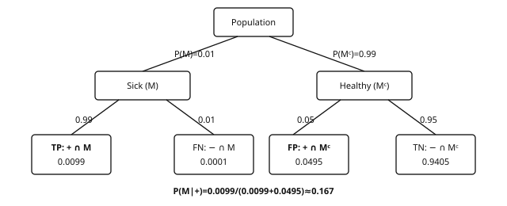
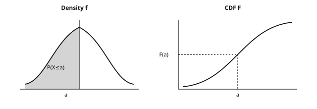
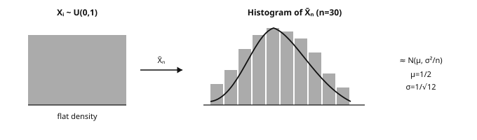
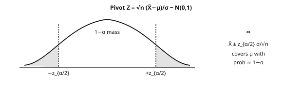

Refresher in Statistics
APM_51438_EP · Year 1 · Period 1
Contents
- Introduction and overview
- 1. The language of probability
- 2. Random variables
- 3. Common probability distributions
- 4. Convergence and limit theorems
- 5. Parametric estimation
- 6. Confidence intervals and tests
- 7. Linear regression
- 8. Bayesian statistics
- 9. Missing data and the instructor’s research
- 10. From statistics to machine learning
- Exercises
- References
Introduction and overview
| Module | Refresher in Statistics (SynapseS 2026-2027 sheet: “Scientific courses — Refresher in Statistics”) |
| Code | APM_51438_EP |
| Team and workload | Course coordinator: Marine Le Morvan (Inria) · workload displayed in the catalog: 12 h of lectures-tutorials (CTD), total volume and ECTS not displayed on the sheet — reference supervision of the track: 36 h · 4.5 ECTS · language of instruction: English · this course brings up to standard all the probabilistic and statistical tools used in the Machine Learning, Deep Learning, NLP and RL modules. |
| Status in the program | L3 refresherMaster prerequisite M1 · S1 / period 1 (fall semester, from 17/09/26 to 18/12/26) |
Audience: engineer with ~10 years of experience who already met means, variances, histograms — you do not need a measure-theory PhD to open this page. Empirical first: start from numbers (false-positive rates, empirical means that “stop moving”, CIs that lie), then name the tool. Rigorous definitions follow when they help diagnose what breaks in ML.
This module brings the probabilistic and statistical toolkit up to standard: distributions, convergence, estimation, tests, regression, Bayesian inference. The catalog unit shows 12 h CTD; these materials surround it with a ~36 h independent-work path. Without these foundations, Machine Learning generalization, stochastic optimization, and generative guarantees stay jargon. Guiding thread: each chapter feeds the next, up to the explicit bridge to statistical learning.
What you will be able to do
- Handle probabilities, random variables and common distributions (binomial, Gaussian, exponential…) without hesitation, including in high dimension.
- State and interpret the limit theorems (law of large numbers, CLT) and recognize the situations where they apply — or do not apply.
- Build an estimator (method of moments, maximum likelihood) and evaluate its bias, variance and squared error.
- Produce a confidence interval and run a hypothesis test while knowing exactly what is being concluded — and what is not.
- Fit and interpret a linear regression, with a critical reading of coefficients and residuals.
- Move from the frequentist framework to the Bayesian one: choice of prior, posterior computation, Bayesian estimation.
- Read an ML research paper and identify which statistical tool is actually used behind each formula.
Official objectives and syllabus (2026-2027 catalog)
The official sheet of the course unit (APM_51438_EP) on SynapseS publishes neither objectives, nor a description, nor a detailed syllabus for the 2026-2027 academic year: these fields are “not disclosed”. The only officially published teaching information is the following.
| Official field | Published value (SynapseS 2026-2027) | In our materials |
|---|---|---|
| Official title | Refresher in Statistics (scientific course, field “Applied Mathematics”) | Used as the module title |
| Coordinator | Marine Le Morvan | Instructor of the module, author of ch. 9 |
| Workload | 12 h of lectures-tutorials (CTD); total volume not displayed | Complete 36 h path including guided personal work |
| Period / language | Fall semester, period 1 (17/09/26 – 18/12/26); teaching in English | Materials in English |
| Objectives | Not disclosed | Target skills listed in “What you will be able to do” above |
| Detailed syllabus | Not disclosed | 10-chapter outline covering the standard core probability → statistics → ML |
| Prerequisites | Not disclosed | No prerequisites beyond undergraduate mathematics |
| Assessment | Numerical grade out of 20; resit allowed (max of the two grades); course unit acquired if final grade ≥ 10; the grade counts toward the GPA | Exercises and labs with solutions for self-assessment |
The “official theme ↔︎ chapter” mapping table cannot be filled honestly as long as the official syllabus is not published: no official theme is therefore flagged as missing. Conversely, two topics of our materials go beyond the usual core of a refresher and should be considered as deepenings specific to the LLGA track, not as official requirements: ch. 9 (missing data, via the research work of the instructor) and ch. 10 (the explicit passage from statistics to machine learning).
Where this course fits in the program
Refresher module of the core curriculum, in Year 1 · Period 1. It assumes no prerequisites beyond undergraduate mathematics and takes place at the very beginning of the program, precisely because everything else depends on it: the official 2026-2027 sheet lists no prerequisites anyway (field “not disclosed”), consistent with this welcoming purpose. Students from selective probability tracks will use it as a quick review; others as an access ramp.
The module is the declared prerequisite of Machine Learning (mandatory), whose opening chapter on optimization and concentration it covers, and of Probability Theory for ML, which extends measure theory and convergence toward Monte Carlo and MCMC. The generalization theory of the Machine Learning module and the bounds of the Statistical Learning Theory module are direct applications of the inequalities and the CLT reviewed here.
More broadly, the Bayesian statistics of chapter 8 prepares the generative models and variational inference encountered in Deep Learning, while estimation and tests feed all the applied modules of Period 2, from NLP to RL. The final chapter, “From statistics to machine learning”, provides the explicit junction with the foundation of the program.
Course outline
- The language of probability: probability spaces, conditioning, independence — the grammar of everything that follows.
- Random variables: discrete, continuous, random vectors and expectation as an integral.
- Common probability distributions: the bestiary of classical distributions and the convergences between them.
- Convergence and limit theorems: LLN, CLT and what “on average” really means.
- Parametric estimation: moments, likelihood, bias and variance.
- Confidence intervals and tests: quantifying uncertainty and deciding under uncertainty.
- Linear regression: the first predictive model, already complete (estimation, inference, diagnostics).
- Bayesian statistics: prior, posterior and the other reading of inference.
- Missing data and the instructor’s research: a major industrial problem, presented through the research of Marine Le Morvan.
- From statistics to machine learning: the deliberate bridge toward the Machine Learning module.
How to study this module
- Start with chapter 1 even if you are comfortable: the notation (expectation, conditional variance) is reused as-is everywhere afterwards.
- Do the exercises of each chapter before moving on to the next: the chapters build on one another, a gap in convergence will be paid for in estimation.
- Redo the proofs of the limit theorems yourself: in ML, it is the statement and its conditions of application that matter.
- Run the proposed numerical simulations (sampling distributions, behavior of the empirical mean) — the code is in Python/NumPy, consistent with the Refresher in Computer Science module.
- If a point blocks you, go back to the chapter section indicated in the cross-reference rather than skipping ahead; the course is designed to be linear.
- Keep the chapter “From statistics to machine learning” for the end: it is the best direct preparation for the Machine Learning module that follows.
Extrapolons note In industry as in research, statistics is the shared language: without it, neither theoretical guarantees nor data-driven decisions hold. These ~36 h are the best ROI of the program — if you read them as an engineer: examples first, σ-algebras second.
1. The language of probability
Before the σ-algebra: a number. A spam filter has 95% recall, but only 2% of mail is spam. On 10,000 messages: ~190 true spam caught… and ~500 false positives if specificity is “only” 95%. The model is not “wrong” — the conditional probability was misread. Same reflex on MNIST-like classification: 99% accuracy on easy digits can hide 20% error on a rare class. ML is a calculus of uncertainty; this chapter gives the vocabulary to avoid swapping denominators.
We keep master’s-level definitions, but the order is deliberate: numbered intuition → formalism. Each definition has a numerical example. Goal: be operational for later modules, not recite Vitali at coffee break.
What breaks if you skip this chapter Confusing P(A\mid B) with P(B\mid A) (medical test / spam); believing pairwise independence ⇒ mutual independence; reading a p-value as “probability that H0 is true”. These three traps return in A/B tests, classifier calibration, and LLM evaluation.
Definition 1.1 — Measurable space A measurable space is a pair (\Omega, \mathcal{F}) where \Omega is the set of possible outcomes (the sample space) and \mathcal{F} \subseteq 2^\Omega is a σ-algebra: a family of subsets of \Omega containing \Omega, stable under complementation and countable unions. The elements of \mathcal{F} are the events: they are exactly the questions to which the model allows a probabilistic answer.
Intuition: the σ-algebra as “available information” Why not simply take \mathcal{F} = 2^\Omega? Two reasons. (i) Technically, on \Omega = [0,1] equipped with length, there exist non-measurable subsets (Vitali’s construction): wanting to measure all subsets leads to contradictions. (ii) Conceptually, a σ-algebra encodes information: if the experiment is “roll a die” but the observer only sees the parity, the relevant σ-algebra is \{\varnothing, \{1,3,5\}, \{2,4,6\}, \Omega\}. This reading “σ-algebra = information” is the key to filtrations (\mathcal{F}_t) in stochastic processes, to conditioning, and to the missing-data models of chapter 9.
Definition 1.2 — Probability A probability on (\Omega,\mathcal{F}) is a map \mathbb{P} : \mathcal{F} \to [0,1] such that \mathbb{P}(\Omega)=1 and, for any family (A_n) of pairwise disjoint events: \mathbb{P}\Big(\bigcup_{n} A_n\Big) = \sum_{n} \mathbb{P}(A_n) \qquad (\sigma\text{-additivity}). The triple (\Omega, \mathcal{F}, \mathbb{P}) is a probability space.
Proposition 1.3 — Immediate properties For all events A, B: \mathbb{P}(A^c) = 1 - \mathbb{P}(A); A \subseteq B \Rightarrow \mathbb{P}(A) \leq \mathbb{P}(B) (monotonicity); union bound: \mathbb{P}(A \cup B) \leq \mathbb{P}(A) + \mathbb{P}(B); and for an increasing sequence (A_n) \uparrow A: \mathbb{P}(A_n) \uparrow \mathbb{P}(A) (increasing sequential continuity).
Proof. Complement: \Omega = A \sqcup A^c, hence 1 = \mathbb{P}(A) + \mathbb{P}(A^c). Monotonicity: B = A \sqcup (B \setminus A) and \mathbb{P}(B\setminus A) \geq 0. Union bound: A \cup B = A \sqcup (B \setminus A) and B \setminus A \subseteq B. Increasing continuity: set C_1 = A_1, C_n = A_n \setminus A_{n-1}; the C_n are disjoint, with union A, and \sum_{k \leq n} \mathbb{P}(C_k) = \mathbb{P}(A_n); conclude by σ-additivity. ∎
1.1. Conditioning and the law of total probability
Definition 1.4 — Conditional probability If \mathbb{P}(B) \> 0: \mathbb{P}(A \mid B) = \dfrac{\mathbb{P}(A \cap B)}{\mathbb{P}(B)}. The map A \mapsto \mathbb{P}(A \mid B) is itself a probability on (\Omega, \mathcal{F}): everything that follows applies to it.
Theorem 1.5 — Law of total probability If (B_i)_{i \in I} is a partition of \Omega into events of nonzero probability, then for every event A: \mathbb{P}(A) \;=\; \sum_{i \in I} \mathbb{P}(A \mid B_i)\,\mathbb{P}(B_i).
Proof. The sets A \cap B_i are pairwise disjoint (because the B_i are) and their union is A (because \bigcup_i B_i = \Omega). By σ-additivity and then by definition of conditioning, \mathbb{P}(A) = \sum_i \mathbb{P}(A \cap B_i) = \sum_i \mathbb{P}(A \mid B_i)\,\mathbb{P}(B_i). ∎
The multiplication formula follows from it immediately: \mathbb{P}(A \cap B) = \mathbb{P}(A \mid B)\mathbb{P}(B), iterated as \mathbb{P}(A \cap B \cap C) = \mathbb{P}(C \mid A \cap B)\,\mathbb{P}(B \mid A)\,\mathbb{P}(A) — this is the skeleton of sequential models (Markov chains, decision trees, LLM autoregression).
1.2. Independence
Definition 1.6 — Independence (three levels)
- Events: A and B are independent if \mathbb{P}(A \cap B) = \mathbb{P}(A)\,\mathbb{P}(B) — “knowing B changes nothing about A”. A family is mutually independent if every finite subfamily factorizes; pairwise independence is not enough (see the note below).
- Variables: X and Y are independent if \mathbb{P}(X \in A, Y \in B) = \mathbb{P}(X \in A)\,\mathbb{P}(Y \in B) for all Borel sets A, B. In terms of densities: f(x,y) = f_X(x) f_Y(y).
- σ-algebras: \mathcal{G} and \mathcal{H} are independent if \mathbb{P}(G \cap H) = \mathbb{P}(G)\mathbb{P}(H) for all G \in \mathcal{G}, H \in \mathcal{H}. This is the right level for stochastic processes: “the future is independent of the past given the present”.
Two classic pitfalls Independence ≠ incompatibility. Two disjoint events with nonzero probabilities are never independent: \mathbb{P}(A \cap B) = 0 \neq \mathbb{P}(A)\mathbb{P}(B). Pairwise ≠ mutual. Two fair dice: A = “the first die is even”, B = “the second die is even”, C = “the sum is even”. Then \mathbb{P}(A)=\mathbb{P}(B)=\mathbb{P}(C)=\tfrac12, every pair factorizes (\mathbb{P}(A \cap B) = \tfrac14, etc.), but \mathbb{P}(A \cap B \cap C) = \tfrac14 \neq \tfrac18: the family is not mutually independent. In learning, “almost independent” features often behave this way — this is exactly what the naive Bayes classifier of the NLP module chooses to ignore.
1.3. Bayes’ formula
Theorem 1.7 — Bayes’ formula If (B_i)_{i\in I} is a partition of \Omega (disjoint events with nonzero probabilities and union \Omega), then for every event A of nonzero probability: \mathbb{P}(B_k \mid A) \;=\; \frac{\mathbb{P}(A \mid B_k)\,\mathbb{P}(B_k)}{\sum_{i\in I} \mathbb{P}(A \mid B_i)\,\mathbb{P}(B_i)}.
Proof. Numerator: \mathbb{P}(A \mid B_k)\mathbb{P}(B_k) = \mathbb{P}(A \cap B_k) = \mathbb{P}(B_k \mid A)\mathbb{P}(A). Denominator: law of total probability (theorem 1.5) applied to \mathbb{P}(A). Divide. ∎
Example 1.8 — Medical test (the example to remember for life) A disease affects 1% of the population (prior). A test has a sensitivity of 99% (\mathbb{P}(+ \mid M) = 0{,}99) and a specificity of 95% (\mathbb{P}(- \mid M^c) = 0{,}95, hence \mathbb{P}(+ \mid M^c) = 0{,}05). A patient gets a positive result: what is the probability that they are sick? \mathbb{P}(M \mid +) = \frac{0{,}99 \times 0{,}01}{0{,}99 \times 0{,}01 + 0{,}05 \times 0{,}99} = \frac{0{,}0099}{0{,}0594} \approx 0{,}167. Only 17%! Out of 10,000 people: ~99 sick people test positive, but ~495 false positives. Intuition fails because it ignores the prevalence; Bayes’ formula puts it back in automatically. This is why just any rare disease is not screened for in just any population.

Example 1.9 — Anti-spam filter (naive Bayes, with numbers) Setup: 40% of emails are spam. The word “free” appears in 70% of spam and 5% of legitimate emails. Partition \{S, S^c\}: \mathbb{P}(S \mid \text{word}) = \frac{0{,}7 \times 0{,}4}{0{,}7 \times 0{,}4 + 0{,}05 \times 0{,}6} = \frac{0{,}28}{0{,}31} \approx 0{,}90. With several words assumed (approximately) independent given the class, the likelihoods are multiplied: this is the naive Bayes classifier, still a formidable baseline in NLP (cf. NLP module). The example also shows the direction of generative reasoning: one posits \mathbb{P}(\text{email} \mid S) — easy to estimate by counting — and inverts it with Bayes to obtain \mathbb{P}(S \mid \text{email}) — what the user needs.
Example 1.10 — Classification: Bayes rule To classify an x among K classes, theory recommends predicting \hat{y}(x) \;=\; \arg\max_k\; \mathbb{P}(y = k \mid x) \;\overset{\text{Bayes}}{=}\; \arg\max_k\; \underbrace{\mathbb{P}(x \mid y = k)}_{\text{likelihood}}\; \underbrace{\mathbb{P}(y = k)}_{\text{class prior}}. This predictor, called the Bayes rule, minimizes the classification error; its error rate is the Bayes error, an unreachable floor. Every classifier in the program (logistic regression, softmax, an LLM choosing the next token) is a way of estimating \mathbb{P}(y \mid x) and then applying the argmax.
1.4. Simpson’s paradox
Example 1.11 — A correlation that reverses A hospital tests two protocols, A and B. Results (patients cured / treated):
| Group | Protocol A | Protocol B |
|---|---|---|
| Mild cases | 95 / 100 = 95% | 470 / 500 = 94% |
| Severe cases | 80 / 200 = 40% | 8 / 50 = 16% |
| Overall | 175 / 300 = 58% | 478 / 550 = 87% |
A is better within each subgroup, but B is better overall! Mechanism: A received mostly severe cases (200/300) and B mostly mild cases (500/550); severity is a confounding factor, and the global table mixes it in.
Simpson, fairness and ML Simpson’s paradox is the simplest example of a non-causal correlation. It haunts fairness: a hiring model that is “neutral on average” by gender may be discriminatory within each source track, or the other way around; likewise for a medical model “globally calibrated” but biased by ethnic subgroup. Technical moral: always stratify before concluding, and remember that a model trained on data biased by a confounding factor learns the confusion. This theme is deepened in the Machine Learning module (chapter on evaluation and biases) and prepared by chapter 9 of this course.
Key takeaways — chapter 1
- σ-algebra = set of events and level of information; probability = total mass 1, σ-additive.
- Law of total probability: split according to a partition; Bayes: invert the conditioning, the prior weighs as much as the likelihood.
- Mutual independence (not only pairwise); independence ≠ incompatibility.
- Simpson: an aggregated association can reverse under stratification — think confounding factor.
2. Random variables
Definition 2.1 — Random variable A real random variable is a measurable map X : \Omega \to \mathbb{R} (i.e. X^{-1}(B) \in \mathcal{F} for every Borel set B). It is discrete if its image is at most countable, with a density (continuous) if there exists f \geq 0 with \int f = 1 such that \mathbb{P}(X \in A) = \int_A f(x)\,dx. The distribution of X is the pushforward measure \mathbb{P}_X: everything that can be computed with X depends only on its distribution, not on \Omega.
A standard dataset in learning is an n-tuple X_1, \dots, X_n that is iid (independent, identically distributed) according to an unknown distribution P: all of chapter 4 consists in describing what happens when n grows.
2.1. Cumulative distribution function
Definition 2.2 F(t) = \mathbb{P}(X \leq t), defined on \mathbb{R}.

Theorem 2.3 — Characteristic properties F is increasing, càdlàg (right-continuous with left limits), with \lim_{t \to -\infty} F(t) = 0 and \lim_{t \to +\infty} F(t) = 1. Conversely, any function satisfying these properties is the cumulative distribution function of a unique distribution. Furthermore \mathbb{P}(a \lt X \leq b) = F(b) - F(a) and \mathbb{P}(X = a) = F(a) - F(a^-): F entirely determines the distribution.
Proof. Monotonicity: if s \leq t then \{X \leq s\} \subseteq \{X \leq t\}, so F(s) \leq F(t) by monotonicity (proposition 1.3). Difference: \{X \leq b\} = \{X \leq a\} \sqcup \{a \lt X \leq b\}, giving the formula by additivity. Limits: \{X \leq n\} \uparrow \Omega as n \to \infty, so F(n) \to 1 by increasing continuity; likewise \{X \leq -n\} \downarrow \varnothing gives F(-n) \to 0. Point mass: \{a - \tfrac1m \lt X \leq a\} \downarrow \{X = a\}, so \mathbb{P}(X=a) = F(a) - \lim_m F(a - \tfrac1m). For uniqueness (the converse), one checks that the formula \mathbb{P}((a,b]) = F(b)-F(a) extends to a probability on the Borel sets — this is Carathéodory’s extension theorem, admitted here. ∎
Usage: the inverse simulation method If U \sim \mathcal{U}[0,1] and F is a continuous strictly increasing cumulative distribution function, then X = F^{-1}(U) has distribution F: indeed \mathbb{P}(F^{-1}(U) \leq x) = \mathbb{P}(U \leq F(x)) = F(x). This is how pseudo-random generators produce all distributions from uniforms — the heart of any Monte Carlo simulation and of the sampling of generative models (cf. Deep Learning module, sampling by CDF inversion or by transformation).
2.2. Variables with a density: change of variables
Theorem 2.4 — The Jacobian formula Let X have density f_X on an open set D \subseteq \mathbb{R}^d and let g : D \to \mathbb{R}^d be a C^1-diffeomorphism. Then Y = g(X) has density f_Y(y) \;=\; f_X\big(g^{-1}(y)\big)\,\Big\|\det J_{g^{-1}}(y)\Big\|, where J_{g^{-1}} is the Jacobian matrix of g^{-1}.
Proof. Case d=1, g increasing: for every t, \mathbb{P}(Y \leq t) = \mathbb{P}(g(X) \leq t) = \mathbb{P}(X \leq g^{-1}(t)) = F_X(g^{-1}(t)). Differentiating (chain rule): f_Y(t) = f_X(g^{-1}(t)) \cdot (g^{-1})'(t). If g is decreasing, the direction of the inequality reverses and the derivative is negative: the absolute value restores the formula. Vector case: same reasoning with the change-of-variables theorem for multiple integrals, which brings in \|\det J\|; local area is dilated exactly by the Jacobian factor, and a density must compensate inversely for the mass to remain 1. ∎
Example 2.5 — Two transformations to know how to redo (a) Exponential by inversion. U \sim \mathcal{U}[0,1], X = -\tfrac1\lambda \ln U. Here g(u) = -\ln(\lambda u)/\lambda… let us take the direct route: F_X(x) = 1 - e^{-\lambda x} for x \geq 0, with inverse F^{-1}(u) = -\tfrac1\lambda\ln(1-u): X = -\tfrac{1}{\lambda}\ln(1-U) follows \mathcal{E}(\lambda). Since 1-U \sim \mathcal{U}[0,1], one also writes X = -\tfrac1\lambda \ln U. (b) Gaussian standardization. X \sim \mathcal{N}(\mu, \sigma^2), Y = \tfrac{X - \mu}{\sigma}: g^{-1}(y) = \sigma y + \mu, (g^{-1})'(y) = \sigma, hence f_Y(y) = \tfrac{1}{\sigma\sqrt{2\pi}} e^{-\frac{(\sigma y + \mu - \mu)^2}{2\sigma^2}} \cdot \sigma = \tfrac{1}{\sqrt{2\pi}} e^{-y^2/2}: Y \sim \mathcal{N}(0,1).
2.3. Expectation, moments, moment generating function
Definition 2.6 — Expectation Discrete: \mathbb{E}[X] = \sum_x x\, p(x) (if \sum \|x\| p(x) \lt \infty). With a density: \mathbb{E}[X] = \int x f(x)\,dx (if \int \|x\| f \lt \infty). More generally \mathbb{E}[h(X)] = \int h \,d\mathbb{P}_X — the transfer formula.
Proposition 2.7 — Linearity, positivity, Tonelli \mathbb{E}[aX+bY] = a\,\mathbb{E}[X]+b\,\mathbb{E}[Y] with no independence assumption. Positivity: X \geq 0 \Rightarrow \mathbb{E}[X] \geq 0, with equality iff X = 0 a.s. Tonelli’s theorem: for measurable h \geq 0, \int h\,d(\mathbb{P}_X \otimes \mathbb{P}_Y) = \iint h\,d\mathbb{P}_X d\mathbb{P}_Y can be interpreted freely (Fubini without an integrability assumption as soon as everything is nonnegative); Fubini extends to integrable functions. Consequence: if X \perp Y, \mathbb{E}[XY] = \mathbb{E}[X]\mathbb{E}[Y].
Proposition 2.8 — Variance and moments \mathrm{Var}(X) = \mathbb{E}[(X-\mathbb{E}X)^2] = \mathbb{E}[X^2] - (\mathbb{E}X)^2 (König-Huygens formula, to be re-derived by expanding the square); \mathrm{Var}(aX+b) = a^2\mathrm{Var}(X); \mathrm{Var}(aX+bY) = a^2\mathrm{Var}(X) + b^2\mathrm{Var}(Y) + 2ab\,\mathrm{Cov}(X,Y), which reduces to the sum when \mathrm{Cov}=0. The k-th moment is \mathbb{E}[X^k]; the order-3 centered normalized moment = skewness, order 4 = kurtosis (distribution diagnostics, cf. Signal Processing module).
Example 2.8b — Discrete X fully expanded (no hidden \sum) Let X\in\{1,2,3\} with \mathbb{P}(X=1)=\tfrac12, \mathbb{P}(X=2)=\tfrac13, \mathbb{P}(X=3)=\tfrac16. Then \begin{aligned} \mathbb{E}[X] &= 1\cdot\tfrac12 + 2\cdot\tfrac13 + 3\cdot\tfrac16 = \tfrac12 + \tfrac23 + \tfrac12 = \tfrac{1}{2}+\tfrac{2}{3}+\tfrac{1}{2} = \tfrac{3}{6}+\tfrac{4}{6}+\tfrac{3}{6} = \tfrac{10}{6} = \tfrac53,\\ \mathbb{E}[X^2] &= 1^2\cdot\tfrac12 + 2^2\cdot\tfrac13 + 3^2\cdot\tfrac16 = \tfrac12 + \tfrac43 + \tfrac96 = \tfrac12 + \tfrac43 + \tfrac32 = \tfrac{3}{6}+\tfrac{8}{6}+\tfrac{9}{6} = \tfrac{20}{6} = \tfrac{10}{3},\\ \mathrm{Var}(X) &= \mathbb{E}[X^2]-(\mathbb{E}[X])^2 = \tfrac{10}{3} - \big(\tfrac53\big)^2 = \tfrac{10}{3} - \tfrac{25}{9} = \tfrac{30}{9}-\tfrac{25}{9} = \tfrac59. \end{aligned} Check: \mathbb{E}[(X-\tfrac53)^2] = (\tfrac{1-5/3})^2\cdot\tfrac12 + (\tfrac{2-5/3})^2\cdot\tfrac13 + (\tfrac{3-5/3})^2\cdot\tfrac16 = \tfrac59.
Definition 2.9 — Moment generating function (MGF) M_X(t) = \mathbb{E}[e^{tX}], defined on a neighborhood of 0 if X has moments of all orders with moderate exponential growth. Properties: (i) M_X^{(k)}(0) = \mathbb{E}[X^k] — hence its name: the moments are “read off” by differentiating; (ii) if X \perp Y, \boxed{M_{X+Y}(t) = M_X(t)\,M_Y(t)}; (iii) if M_X exists around 0, it characterizes the distribution (Lévy’s continuity theorem).
Proof. (ii): by Tonelli/Fubini justified by independence, \mathbb{E}[e^{t(X+Y)}] = \mathbb{E}[e^{tX}e^{tY}] = \mathbb{E}[e^{tX}]\,\mathbb{E}[e^{tY}]. (i): differentiate under the expectation \frac{d^k}{dt^k}\mathbb{E}[e^{tX}] = \mathbb{E}[X^k e^{tX}] then evaluate at t=0. Examples to know: Bernoulli(p): 1-p+pe^t; Poisson(\lambda): e^{\lambda(e^t-1)}; \mathcal{N}(\mu,\sigma^2): e^{\mu t + \sigma^2 t^2/2}; exponential: \frac{\lambda}{\lambda - t} (t \lt \lambda). ∎
2.4. Basic inequalities
Theorem 2.10 — Markov If X \geq 0 and a \> 0: \mathbb{P}(X \geq a) \leq \dfrac{\mathbb{E}[X]}{a}.
Proof. \mathbb{E}[X] = \mathbb{E}[X\,\mathbf{1}_{X \lt a}] + \mathbb{E}[X\,\mathbf{1}_{X \geq a}] \geq 0 + a\,\mathbb{P}(X \geq a), because on the event \{X \geq a\} we have X \geq a and \mathbb{E}[X\mathbf{1}_{X\geq a}] \geq a\,\mathbb{E}[\mathbf{1}_{X \geq a}] by positivity. Isolate \mathbb{P}(X \geq a). ∎
Example 2.10b — Markov with numbers Nonnegative X with \mathbb{E}[X]=2. Bound \mathbb{P}(X\geq 10): \mathbb{P}(X\geq 10)\leq 2/10=0.2. If also \mathrm{Var}(X)=1, Chebyshev gives \mathbb{P}(|X-2|\geq 3)\leq 1/9\approx 0.111 — often tighter when a variance is known.
Theorem 2.11 — Chebyshev (and Bienaymé) If \mathrm{Var}(X) \lt \infty and t \> 0: \mathbb{P}\big(\|X - \mathbb{E}X\| \geq t\big) \leq \dfrac{\mathrm{Var}(X)}{t^2}.
Proof. Apply Markov to the nonnegative variable Y = (X - \mathbb{E}X)^2 with a = t^2: \mathbb{P}(\|X-\mathbb{E}X\| \geq t) = \mathbb{P}(Y \geq t^2) \leq \mathbb{E}[Y]/t^2 = \mathrm{Var}(X)/t^2. ∎
Theorem 2.12 — Cauchy-Schwarz \|\mathbb{E}[XY]\| \leq \sqrt{\mathbb{E}[X^2]\,\mathbb{E}[Y^2]}, with equality iff X and Y are collinear in L^2. In particular \|\rho_{X,Y}\| \leq 1 for any correlation pair.
Proof. For every \lambda \in \mathbb{R}, 0 \leq \mathbb{E}[(X + \lambda Y)^2] = \mathbb{E}[X^2] + 2\lambda\,\mathbb{E}[XY] + \lambda^2\mathbb{E}[Y^2]: this is a quadratic in \lambda that is nonnegative, hence with discriminant \leq 0, i.e. 4\,\mathbb{E}[XY]^2 - 4\,\mathbb{E}[X^2]\mathbb{E}[Y^2] \leq 0. ∎
2.5. Covariance, correlation, independence: untangling
Definition 2.13 \mathrm{Cov}(X,Y) = \mathbb{E}[(X-\mathbb{E}X)(Y-\mathbb{E}Y)] = \mathbb{E}[XY] - \mathbb{E}X\,\mathbb{E}Y; \rho_{X,Y} = \mathrm{Cov}(X,Y)/(\sigma_X\sigma_Y) \in [-1,1].
Proposition 2.14 — The direction of the implications Independence \Rightarrow \mathrm{Cov}(X,Y) = 0 (and more: factorization of all functions). The converses are false:
- Uncorrelated yet dependent. X uniform on \{-1,0,1\}, Y = X^2. Then \mathrm{Cov}(X,Y) = \mathbb{E}[X^3] - \mathbb{E}[X]\mathbb{E}[X^2] = 0 - 0 = 0, whereas Y is a deterministic function of X. Linear correlation does not see nonlinear dependencies — a flaw exploited by certain adversarial attacks and the excuse of “maximum entropy” features.
- Correlation without direct link. Two variables caused by a third one (confounding) can be highly correlated (cf. Simpson, example 1.11).
- $ || = 1$ \iff there exist a,b with Y = aX+b a.s.: extreme correlation is exclusively affine.
2.6. Random vectors and conditional expectation
A random vector X = (X_1, \dots, X_d) \in \mathbb{R}^d admits a joint density f(x_1,\dots,x_d). The marginal distributions are obtained by integrating out the other variables: f_{X_1}(x_1) = \int f(x_1, x_2,\dots,x_d)\,dx_2 \dots dx_d, and the conditional density is f_{X\|Y}(x \mid y) = f(x,y)/f_Y(y). The Bayesian version of conditioning reads f_{Y\|X}(y \mid x) \propto f_{X\|Y}(x\mid y)\, f_Y(y): exactly Bayes in densities.
Definition 2.15 — Conditional expectation The conditional expectation of X given Y=y is g(y) = \mathbb{E}[X \mid Y = y] = \int x \, f_{X\|Y}(x\mid y)\,dx. The variable \mathbb{E}[X \mid Y] = g(Y) is the best approximation of X by a function of Y in the least-squares sense: for every h, \mathbb{E}[(X - h(Y))^2] \geq \mathbb{E}[(X - g(Y))^2] — this is the projection theorem in L^2. Tower property: \mathbb{E}[\mathbb{E}[X \mid Y]] = \mathbb{E}[X], and \mathrm{Var}(X) = \mathbb{E}[\mathrm{Var}(X\mid Y)] + \mathrm{Var}(\mathbb{E}[X \mid Y]) (law of total variance: variance within + variance between groups — the identity at the heart of ANOVA, chapter 6).
Connection with regression In supervised learning, one seeks to predict Y from X. The optimal predictor in the mean squared error sense is exactly the regression function x \mapsto \mathbb{E}[Y \mid X = x]. This is the object that all our models (linear, neural networks, forests…) try to approximate; the irreducible error is \mathbb{E}[\mathrm{Var}(Y\mid X)].
2.7. Generating and manipulating distributions in Python
import numpy as np
rng = np.random.default_rng(seed=42) # modern generator (PCG64)
x = rng.normal(loc=0.0, scale=1.0, size=1000) # 1000 draws from N(0,1)
u = rng.uniform(0, 1, size=100_000)
# Inverse method (theorem 2.4 + note 2.1): uniform U -> exponential
lam = 2.0
expo = -np.log(1.0 - u) / lam
print(expo.mean().round(4), (1/lam)) # ~0.5 = E[X] of E(2)
# Empirical CDF, histogram (empirical density)
import matplotlib.pyplot as plt
plt.hist(x, bins=40, density=True, alpha=.6, label='sample')
grid = np.linspace(-4, 4, 200)
plt.plot(grid, np.exp(-grid**2/2)/np.sqrt(2*np.pi), 'r', label='N(0,1) density')
plt.legend(); plt.show()
print(x.mean(), x.var(ddof=1)) # empirical mean, (unbiased) variance
print(np.quantile(x, [0.25, 0.5, 0.75])) # order statistics (chap. 3)Key takeaways — chapter 2
- The cumulative distribution function characterizes the distribution; the inverse method simulates any continuous distribution from uniforms.
- Change of variables: f_Y(y) = f_X(g^{-1}(y))\,\|\!\det J_{g^{-1}}(y)\| — the Jacobian compensates the local dilation.
- MGF: moments by differentiation, product for sums of independent variables.
- Markov \to Chebyshev \to (chapter 4) the law of large numbers: the chain of inequalities is also a chain of proofs.
- Uncorrelated \neq independent (counterexample Y = X^2).
3. Common probability distributions
These are the “bricks” that the program reuses constantly. You must know their support, parameters, expectation and variance, and know when they appear. The table below is your reference map; the ML scenarios indicate in which module the distribution comes up.
| Distribution | Parameters | Expectation | Variance | Typical use in ML |
|---|---|---|---|---|
| Bernoulli p | p \in [0,1] p | $p( | 1-p)$ bin | ary label, classifier |
| Binomial \mathcal{B}(n,p) $ | n, p$ $ | np$ $ | np(1-p)$ n | umber of successes / errors over n trials |
| Multinomial \mathrm{Mult}(n, (p_1,\dots,p_K)) $n | $, probs p_k $n | p_k$ (per cell) $n | p_k(1-p_k)$ cl | ass counts, softmax output, \chi^2 test (chap. 6) |
| Geometric p | p | 1/p | (1-p)/p^2 n | umber of trials before the first success; rejection sampling |
| Hypergeometric | N, K, n | nK/N | n\frac{K}{N}(1-\frac{K}{N})\frac{N-n}{N-1} sam | pling without replacement (production batches, A/B) |
| Uniform \mathcal{U}[a,b] $a\ | <b$ $ | frac{a+b}{2}$ $ | rac{(b-a)^2}{12}$ initia | lization, simulation (inverse method) |
| Exponential \mathcal{E}(\lambda) $\ | lambda>0$ $1/ | $ $1/\ | lambda^2$ lifeti | mes, queues, Poisson waiting times |
| Poisson \mathcal{P}(\lambda) $\ | lambda>0$ $ | ambda$ $ | mbda$ count | s of rare events; “Laplace-style” L2 regularization (via the double-exponential distribution) |
| Gamma \Gamma(a, b) (shape a, scale b) $ | a,b>0$ $ | ab$ $ | ab^2$ ag | gregated durations, conjugate priors (precision), Hawkes process (Emerging ML) |
| Beta \mathrm{Beta}(a,b) $ | a,b>0$ $ | $ $\ | tfrac{ab}{(a+b)^2(a+b+1)}$ dist | ribution of an unknown probability; conjugate prior of the Bernoulli (chap. 8) |
| Gaussian \mathcal{N}(\mu,\sigma^2) $ | , ^2$ \mu | $^ | 2$ noise, pos | terior distribution, diffusion |
| Chi-square \chi^2_k $k | ^*$ k | 2k | goodn | ess-of-fit tests, squared deviations, empirical variance |
| Student t_k | k | 0\ (k\>1) $ | (k>2)$ con | fidence intervals in small samples |
| Fisher \mathcal{F}(d_1, d_2) $ | d_1, d_2$ $ | (d_2>2)$ $ | frac{2d_22(d_1+d_2-2)}{d_1(d_2-2)2(d_2-4)}$ compar | ison of variances, ANOVA (chap. 6) |
Definition 3.1 — Multivariate Gaussian distribution X \sim \mathcal{N}(\mu, \Sigma) with \mu \in \mathbb{R}^d and \Sigma a symmetric positive definite covariance matrix, if X admits the density f(x) = \frac{1}{(2\pi)^{d/2}\,\|\Sigma\|^{1/2}} \exp\!\Big(-\tfrac12 (x-\mu)^\top \Sigma^{-1} (x-\mu)\Big). If the components are uncorrelated (\Sigma diagonal), they are independent — a property exclusive to the Gaussian. An equivalent and often more convenient characterization: X is Gaussian iff every linear combination a^\top X is a real Gaussian.
Example 3.0b — Bernoulli and exponential, plug-in numbers (Bernoulli.) Coin with unknown p. Observe x_{1:5}=(1,0,1,1,0) so s=3 successes in n=5. Likelihood L(p)=p^3(1-p)^2. Log-likelihood \ell(p)=3\log p + 2\log(1-p). Derivative: \ell'(p)=3/p - 2/(1-p)=0 ⇒ 3(1-p)=2p ⇒ 3=5p ⇒ \hat p_{\mathrm{MLE}}=3/5=0.6. Second derivative \ell''(0.6)=-3/(0.6)^2-2/(0.4)^2<0: maximum.
(Exponential.) Densities f(x)=\lambda e^{-\lambda x} for x>0. Sample (1.2,\,0.4,\,2.0) (hours). Likelihood \lambda^3 e^{-\lambda(1.2+0.4+2.0)}=\lambda^3 e^{-3.6\lambda}. Score: 3/\lambda - 3.6=0 ⇒ \hat\lambda_{\mathrm{MLE}}=3/3.6=5/6\approx 0.833. Mean plug-in: \widehat{\mathbb{E}[X]}=1/\hat\lambda=1.2, which matches the sample mean (1.2+0.4+2.0)/3=1.2.
3.1. Gaussians: marginals and conditionals
Theorem 3.2 — Gaussian conditioning Let (X, Y) be a Gaussian vector with mean (\mu_X, \mu_Y) and block covariance \Sigma = \begin{pmatrix} \Sigma_{XX} & \Sigma_{XY} \\ \Sigma_{YX} & \Sigma_{YY}\end{pmatrix}. Then:
- Gaussian marginals: X \sim \mathcal{N}(\mu_X, \Sigma_{XX}) (projections of a Gaussian vector are Gaussian — by the linear characterization);
- Gaussian conditional: Y \mid X = x \;\sim\; \mathcal{N}\big(\mu_Y + \Sigma_{YX}\Sigma_{XX}^{-1}(x - \mu_X),\;\; \Sigma_{YY} - \Sigma_{YX}\Sigma_{XX}^{-1}\Sigma_{XY}\big). The conditional mean is affine in x and the conditional covariance is constant (homoscedasticity).
Proof. Assume \Sigma_{XX} invertible and complete the square in the exponent. By the characterization, it suffices to identify the mean and covariance. Set A = \Sigma_{YX}\Sigma_{XX}^{-1} and Z = Y - \mu_Y - A(x-\mu_X) for fixed x. Write the vector \binom{X-\mu_X}{Z}: it is an invertible affine transformation of the Gaussian (X,Y), hence Gaussian. Its cross-covariance: \mathrm{Cov}(X - \mu_X, Z) = \Sigma_{XY} - \Sigma_{XX}\Sigma_{XX}^{-1}\Sigma_{XY} = 0. For a Gaussian, zero covariance \Rightarrow independence (definition 3.1): hence Z is independent of X, Z \sim \mathcal{N}(0, \Sigma_{YY} - \Sigma_{YX}\Sigma_{XX}^{-1}\Sigma_{XY}). Rearranging, Y = \mu_Y + A(x - \mu_X) + Z: for fixed X=x, Y is the sum of a constant and of a Gaussian independent of x, giving the announced conditional distribution. ∎
This theorem works everywhere in the program Gaussian regression (chapter 7: affine \mathbb{E}[Y \mid X] recovers least squares), Kalman filter, Gaussian processes, kriging, Gaussian latent variable models, diffusion (each step conditions a Gaussian noise — cf. Deep Learning module), variational autoencoders (diagonal Gaussian posterior — Multimodal GenAI module). Remember the mantra: conditioning a Gaussian shifts the mean affinely and shrinks the covariance (by \Sigma_{YX}\Sigma_{XX}^{-1}\Sigma_{XY}, a symmetric positive definite gain).
3.2. Sums of variables: stability under convolution
Theorem 3.3 — Sums of independent variables If X \perp Y, the distribution of X+Y is the convolution product f_{X+Y}(z) = \int f_X(x) f_Y(z-x)\,dx, and via the MGF (proposition 2.9): M_{X+Y} = M_X M_Y. Families stable under sums of independent variables:
| Family | Sum | MGF verification |
|---|---|---|
| \mathcal{B}(n_1,p), \mathcal{B}(n_2,p) $\ | mathcal{B}(n_1+n_2,p)$ $(1 | -p+pet){n_1+n_2}$ |
| \mathcal{P}(\lambda_1), \mathcal{P}(\lambda_2) $ | thcal{P}(_1+_2)$ $e^{( | ambda_1+_2)(e^t-1)}$ |
| \Gamma(a_1,b), \Gamma(a_2,b) $\ | Gamma(a_1+a_2,b)$ (same scale) $(1 | -bt)^{-(a_1+a_2)}$ |
| \mathcal{N}(\mu_1,\sigma_1^2), \mathcal{N}(\mu_2,\sigma_2^2) $ | l{N}(_1+_2,_1^2+_2^2)$ $e^{(1+ | 2)t + (_1^2+_22)t2/2}$ |
| \chi^2_{k_1}, \chi^2_{k_2} $^ | 2_{k_1+k_2}$ special c | ase of gamma |
The mean of n iid variables stays in the family when it is stable, with constant expectation and variance divided by n — this is the quantitative “concentration” that prepares for the CLT.
Example 3.4 — Gaussian sum, in one line of MGF M_{X+Y}(t) = e^{\mu_1 t + \sigma_1^2 t^2/2}\,e^{\mu_2 t + \sigma_2^2 t^2/2} = e^{(\mu_1+\mu_2)t + (\sigma_1^2+\sigma_2^2)t^2/2}: we recognize the MGF of \mathcal{N}(\mu_1+\mu_2, \sigma_1^2+\sigma_2^2), and the MGF characterizes the distribution (theorem 2.9 (iii)). Variances add up: standard deviations add up as \sqrt{\sigma_1^2+\sigma_2^2} — hence the 1/\sqrt n reduction of the empirical mean (chapter 4).
3.3. Order statistics
Proposition 3.5 — Distributions of the minimum and the maximum For X_1, \dots, X_n iid with cumulative distribution function F: \mathbb{P}(\max_i X_i \leq t) = F(t)^n, \qquad \mathbb{P}(\min_i X_i \leq t) = 1 - \big(1 - F(t)\big)^n. More generally X_{(k)} (the k-th smallest) serves to define quantiles: the empirical quantile of order q is X_{(\lceil qn \rceil)}.
Proof. \{\max \leq t\} = \bigcap_i \{X_i \leq t\} and the events are independent: product of the n probabilities F(t). Likewise \{\min \> t\} = \bigcap_i \{X_i \> t\}, with probability (1-F(t))^n. ∎
Example 3.6 — Maximum of uniforms and quantiles in code If X_i \sim \mathcal{U}[0,1], \max_i X_i has density n t^{n-1} (derivative of t^n): it is a \mathrm{Beta}(n,1) distribution with expectation \frac{n}{n+1}. With n = 9 trials, the expected best score is already 0.9. This “boost given to the best’s luck” explains why few trials are enough to noticeably improve a hyperparameter (random search), and why the maximum of n samples escapes toward the extreme (extreme value theory, useful in risk and in RL).
import numpy as np
rng = np.random.default_rng(0)
x = rng.uniform(0, 1, size=(10_000, 9))
print(x.max(axis=1).mean().round(3)) # ~0.900 = n/(n+1)
q = np.quantile(rng.normal(size=100_000), [0.05, 0.25, 0.5, 0.75, 0.95])
print(q.round(3)) # boxplot: [-1.645 -0.674 0 0.674 1.645]The Gaussian and ML The Gaussian distribution is omnipresent: noise model in regression, initialization of neural network weights, diffusion processes in generative AI, conjugate Bayesian prior. Its stability under linear combination (theorem 3.3) and the CLT (chapter 4) explain this role; its affine conditioning (theorem 3.2) explains the rest.
Key takeaways — chapter 3
- Distribution table: know how to state expectation/variance and an ML scenario.
- Gaussian vector: Gaussian marginals and conditionals, affine conditional mean — the most reused tool of the program.
- Sums of independent variables: convolution; stable families (binomial, Poisson, gamma, Gaussian, \chi^2).
- Order statistics: \max \to F^n, \min \to 1-(1-F)^n; empirical quantiles = order + interpolation.
4. Convergence and limit theorems
In ML, one optimizes on a finite sample and hopes for good generalization behavior: asymptotic theory justifies this passage from the empirical to the true risk. This chapter is the conceptual pivot of the program: the LLN and the CLT are proved (or sketched) here, because they reappear in every consistency proof.
Definition 4.1 — Modes of convergence Let (X_n) and X be real variables.
- Almost sure (a.s.): \mathbb{P}\big(\lim X_n = X\big) = 1;
- In probability: \forall \varepsilon \> 0,\; \mathbb{P}(\|X_n - X\| \> \varepsilon) \to 0;
- In L^p: \mathbb{E}\|X_n - X\|^p \to 0;
- In distribution: F_{X_n}(t) \to F_X(t) at every continuity point of F_X.
Proposition 4.2 — Implications (and their proofs) Almost sure \Rightarrow in probability \Rightarrow in distribution; L^p \Rightarrow in probability. The converses are false.
Proof. L^p \Rightarrow probability: Markov (2.10) applied to \|X_n - X\|^p gives \mathbb{P}(\|X_n-X\| \> \varepsilon) \leq \mathbb{E}\|X_n-X\|^p/\varepsilon^p \to 0. a.s. \Rightarrow probability: denote A_n(\varepsilon) = \bigcup_{k \geq n}\{\|X_k - X\| \> \varepsilon\}, a decreasing sequence of events; \bigcap_n A_n(\varepsilon) is the set of \omega such that \|X_k(\omega) - X(\omega)\| \> \varepsilon infinitely often, included in the complement of a.s. convergence: zero probability. By decreasing continuity (proposition 1.3), \mathbb{P}(A_n) \downarrow 0, while \mathbb{P}(\|X_n - X\| \> \varepsilon) \leq \mathbb{P}(A_n). probability \Rightarrow distribution: at a continuity point t, F_n(t) = \mathbb{P}(X_n \leq t) \leq \mathbb{P}(X \leq t + \varepsilon) + \mathbb{P}(\|X_n - X\| \> \varepsilon), and likewise in the other direction with t - \varepsilon; \limsup F_n(t) and \liminf F_n(t) are sandwiched by F(t \pm \varepsilon), then let \varepsilon \downarrow 0 (continuity of F at t). Counterexample to the converse: X_n = n with probability 1/n, 0 otherwise. \mathbb{P}(\|X_n\| \> \varepsilon) = 1/n \to 0 (hence also in distribution), but \mathbb{E}\|X_n\| = 1 (no L^1) and \sum_n \mathbb{P}(\|X_n\| \> \varepsilon) = \sum 1/n = \infty, so (Borel-Cantelli, independence of the dyadics aside) a.s. convergence fails: “rare big jumps” pass in probability but destroy the means. ∎
Theorem 4.3 — (Weak) law of large numbers Let (X_n) be iid with \mathbb{E}\|X_1\| \< \infty and \mu = \mathbb{E}X_1. Then \bar{X}_n = \frac{1}{n}\sum_{i=1}^n X_i \;\xrightarrow[n\to\infty]{\mathbb{P}}\; \mu .
Proof. Elementary proof under the finite variance assumption \sigma^2 \< \infty. By linearity \mathbb{E}[\bar X_n] = \mu (no bias), and by independence (proposition 2.8): \mathrm{Var}(\bar X_n) = \frac{1}{n^2}\sum_{i=1}^n \mathrm{Var}(X_i) = \frac{\sigma^2}{n}. Chebyshev (2.11) then gives, for every \varepsilon \> 0: \mathbb{P}\big(\|\bar X_n - \mu\| \geq \varepsilon\big) \;\leq\; \frac{\sigma^2}{n\,\varepsilon^2} \;\xrightarrow[n\to\infty]{}\; 0. The general version (\mathbb{E}\|X_1\| \< \infty suffices) is due to Kolmogorov and requires the strong law; the L^2 version above is the one that will be reused everywhere. ∎
Theorem 4.4 — Central limit theorem (CLT) Let (X_n) be iid, \mu = \mathbb{E}X_1, \sigma^2 = \mathrm{Var}(X_1) \< \infty. Then \frac{\bar{X}_n - \mu}{\sigma / \sqrt{n}} \;\xrightarrow[n\to\infty]{(\text{dist.})}\; \mathcal{N}(0,1). In other words: \bar X_n \approx \mathcal{N}\big(\mu, \tfrac{\sigma^2}{n}\big) for large n.

Example 4.4b — Fair die, written CLT table Fair die: \mu=3.5, \sigma^2=35/12\approx 2.9167. For n iid rolls, theory gives \mathrm{sd}(\bar X_n)=\sigma/\sqrt{n}. One Monte Carlo (2000 repeats, seed 0) vs theory:
| n | Empirical mean of \bar X_n E | mpirical sd T | heory \sigma/\sqrt{n} |
|---|---|---|---|
| 1 | 3.579 | 1.690 | 1.708 |
| 5 | 3.489 | 0.747 | 0.764 |
| 20 | 3.492 | 0.382 | 0.382 |
| 100 | 3.502 | 0.171 | 0.171 |
By n=20 the sd already matches 1/\sqrt{n} scaling; the histogram of means is visually near-Gaussian (schema above).
Proof. Ideas of the proof via MGFs (sketch). Set Z_i = \frac{X_i - \mu}{\sigma} (centered, standardized) and S_n = \frac1{\sqrt n}\sum_i Z_i. For large n, e^{t Z_i/\sqrt n} \approx 1 + \frac{t Z_i}{\sqrt n} + \frac{t^2 Z_i^2}{2n} + o(1/n) (Taylor expansion, finite moments); taking expectations: M_{Z}(t/\sqrt n) \approx 1 + \frac{t^2}{2n} (because \mathbb{E}Z_i = 0, \mathbb{E}Z_i^2 = 1). By independence (proposition 2.9 (ii)): M_{S_n}(t) = \Big(1 + \frac{t^2}{2n} + o\Big(\frac1n\Big)\Big)^{\!n} \;\xrightarrow[n\to\infty]{}\; e^{t^2/2}, using (1 + a/n)^n \to e^a. We recognize the MGF of \mathcal{N}(0,1) (example under 2.9), and Lévy’s continuity theorem converts convergence of the MGFs into convergence in distribution. The limit is Gaussian whatever the initial distribution — this is what makes the Gaussian universal. ∎
Proposition 4.5 — The 1/\sqrt n rate, with orders of magnitude The standard deviation of \bar X_n is \sigma/\sqrt n. Concretely:
| n | 10 | 100 | 10,000 | 1,000,000 |
|---|---|---|---|---|
| error reduction factor | 3.2 | 10 | 100 | 1,000 |
Dividing the error by 2 requires 4 times more data; dividing it by 10 requires 100 times more. This 1/\sqrt n is the fundamental order of magnitude of statistics: it caps sampling gains and explains variance reduction methods (importance sampling, antithetic variables — cf. RL module for Monte Carlo estimation of the return).
Theorem 4.6 — Delta method If \sqrt n (\bar X_n - \mu) \to \mathcal{N}(0, \sigma^2) and g is C^1 in a neighborhood of \mu with g'(\mu) \neq 0: \sqrt n\,\big(g(\bar X_n) - g(\mu)\big) \;\xrightarrow{(\text{dist.})}\; \mathcal{N}\big(0,\; \sigma^2\, g'(\mu)^2\big).
Proof. Taylor expansion: g(\bar X_n) = g(\mu) + g'(\mu)(\bar X_n - \mu) + o(\|\bar X_n - \mu\|). Multiplying by \sqrt n, the remainder is o(\sqrt n \|\bar X_n - \mu\|) = o_p(1) because \sqrt n(\bar X_n - \mu) is tight (CLT); what remains is a linearized version to which the CLT and Slutsky’s lemma are applied. Example: g = \log. \sqrt n(\log \bar X_n - \log\mu) \to \mathcal{N}(0, \sigma^2/\mu^2): the CI for \log\mu (scale parameter) follows from that of \mu. Another massive use: transforming a ratio or probability estimator to the logit scale (Machine Learning module, inference on odds ratios). ∎
4.1. Empirical quantiles and the bootstrap
The empirical cumulative distribution function F_n(t) = \frac1n \sum_i \mathbf{1}_{X_i \leq t} is a “plug-in” estimator of F; the Glivenko-Cantelli theorem strengthens the LLN: \sup_t \|F_n(t) - F(t)\| \to 0 almost surely. The empirical quantile of order q follows from it by inversion (proposition 3.5). To build confidence intervals for nonlinear statistics (median, ratio, AUC), the nonparametric bootstrap resamples B times with replacement from the observed sample, recomputes the statistic, and reads off the quantiles of its bootstrap distribution:
import numpy as np
rng = np.random.default_rng(0)
x = rng.standard_t(df=3, size=200) # skewed distribution, nontrivial median
B = 5_000
boot_med = np.array([np.median(rng.choice(x, size=len(x), replace=True))
for _ in range(B)])
lo, hi = np.quantile(boot_med, [0.025, 0.975])
print(f"95% bootstrap CI of the median: [{lo:.3f}, {hi:.3f}]")
# Justification: F_n -> F (Glivenko-Cantelli), so the distribution of the statistic
# recomputed on F_n approaches its true distribution; the [2.5%, 97.5%] quantiles give
# the "percentile" interval. Caution: fails on extreme statistics (max).Example 4.7 — Numerical verification of the CLT
import numpy as np
rng = np.random.default_rng(0)
for n in [1, 5, 30, 200]:
# 5000 repetitions of the mean of n uniforms [0,1]
means = rng.uniform(0, 1, size=(5000, n)).mean(axis=1)
std = means.std()
print(f"n={n:4d} observed std = {std:.4f} "
f"(theory 1/sqrt(12 n) = {1/np.sqrt(12*n):.4f})")The standard deviation of \bar X_n decreases exactly as 1/\sqrt n: this is the CLT in action, and the reason why “more data” is the first answer to almost all generalization problems. Note also the near-Gaussianity from n = 30 — the origin of the empirical “30 samples” rule.
Key takeaways — chapter 4
- a.s. \Rightarrow probability \Rightarrow distribution; L^2 \Rightarrow probability; converses false (rare jumps counterexample).
- LLN: Chebyshev + variance of the mean \sigma^2/n, complete proof.
- CLT: \sqrt n standardization, MGF proof sketched, 1/\sqrt n rate (×4 data for ÷2 error).
- Delta method: propagate the CLT through a derivative; bootstrap: recompute the distribution of a statistic by resampling.
5. Parametric estimation
We assume that the distribution of the data belongs to a parametric family \{p_\theta : \theta \in \Theta\} and we seek to identify \theta from an iid sample X_1, \dots, X_n. This chapter builds the foundation: bias/variance, likelihood, Fisher, Cramér-Rao — then chapter 6 derives intervals and tests from it.
Definition 5.1 — Estimator, bias, squared risk An estimator \hat\theta_n = g(X_1,\dots,X_n) is a statistic taking values in \Theta. Its bias is b(\hat\theta) = \mathbb{E}[\hat\theta] - \theta, its squared risk (mean squared error, MSE) is \mathbb{E}[(\hat\theta - \theta)^2].
Theorem 5.2 — Bias-variance decomposition \mathbb{E}[(\hat\theta - \theta)^2] = \underbrace{\big(\mathbb{E}[\hat\theta] - \theta\big)^2}_{\text{bias}^2} + \underbrace{\mathrm{Var}(\hat\theta)}_{\text{variance}}.
Proof. Set m = \mathbb{E}[\hat\theta] and write \hat\theta - \theta = (\hat\theta - m) + (m - \theta). Expanding the square and taking the expectation: \mathbb{E}[(\hat\theta - m)^2] + 2(m-\theta)\,\underbrace{\mathbb{E}[\hat\theta - m]}_{=0} + (m - \theta)^2 = \mathrm{Var}(\hat\theta) + b(\hat\theta)^2. The cross term is zero by definition of the expectation: this is the whole magic of the decomposition. ∎
Example 5.3 — Why n-1: bias of the empirical variance Let S_n^2 = \frac1n\sum_i (X_i - \bar X_n)^2. One computes \sum_i (X_i - \bar X_n)^2 = \sum_i (X_i - \mu)^2 - n(\bar X_n - \mu)^2 (expand the squares, the cross term cancels). In expectation: n\sigma^2 - n \cdot \frac{\sigma^2}{n} = (n-1)\sigma^2, hence \mathbb{E}[S_n^2] = \frac{n-1}{n}\sigma^2 \lt \sigma^2: S_n^2 is biased downward. Correcting by dividing by n-1 gives the usual unbiased estimator \frac{1}{n-1}\sum_i (X_i - \bar X_n)^2. The bias comes from the internal estimation of \mu by \bar X_n, which already “sticks” to the data. This small computation is the prototype of all the bias-variance trade-offs that follow.
Definition 5.4 — Likelihood and maximum likelihood (MLE) The likelihood of an iid sample is L(\theta) = \prod_{i=1}^n p_\theta(X_i) (density or mass) and the log-likelihood is \ell(\theta) = \sum_i \log p_\theta(X_i). The maximum likelihood estimator is \hat\theta_{\mathrm{MLE}} \in \arg\max_\theta \ell(\theta).
Example 5.0b — Gaussian MLE with a 4-point sample Observations x=(2.0,\,2.5,\,1.5,\,2.0). For \mathcal{N}(\mu,\sigma^2) with both unknown: \hat\mu = \bar x = \frac{2+2.5+1.5+2}{4} = 2.0,\qquad \hat\sigma^2_{\mathrm{MLE}} = \frac1n\sum_i (x_i-\bar x)^2 = \frac{(0)^2+(0.5)^2+(-0.5)^2+(0)^2}{4} = \frac{0.5}{4} = 0.125. (The unbiased s^2 would divide by n-1=3: s^2=0.5/3\approx 0.1667.) Log-likelihood at this point: \ell=-\tfrac{n}{2}\log(2\pi\hat\sigma^2)-\tfrac{n}{2}.
5.1. Score and Fisher information
Definition 5.5 — Score The score is the derivative of the log-likelihood of one observation: s(\theta) = \nabla_\theta \log p_\theta(X) (for the sample: \sum_i s_i(\theta), a sum of iid terms).
Theorem 5.6 — Two properties of the score Under regularity (differentiation under the integral allowed): \text{(i)}\;\; \mathbb{E}_\theta[s(\theta)] = 0, \qquad \text{(ii)}\;\; \mathrm{Var}_\theta[s(\theta)] = \mathbb{E}_\theta\big[-\nabla^2_\theta \log p_\theta(X)\big] =: I(\theta). I(\theta) is the Fisher information: the variance of the score, or equivalently minus the average curvature of the log-likelihood.
Proof. (i) 1 = \int p_\theta(x)\,dx for every \theta; differentiating under the integral: 0 = \int \nabla_\theta p_\theta(x)\,dx = \int \frac{\nabla_\theta p_\theta(x)}{p_\theta(x)} p_\theta(x)\,dx = \mathbb{E}[\nabla_\theta \log p_\theta(X)] = \mathbb{E}[s(\theta)]. (ii) Differentiate the identity \int \nabla_\theta p_\theta = 0 again: 0 = \int \nabla^2_\theta p_\theta = \mathbb{E}[\nabla^2_\theta \log p_\theta(X)] + \mathbb{E}\big[\nabla_\theta \log p_\theta \,\nabla_\theta \log p_\theta^\top\big] (product rule on \nabla^2 p = (\nabla^2 \log p)\,p + (\nabla\log p)(\nabla\log p)^\top p). Hence \mathbb{E}[s s^\top] = -\mathbb{E}[\nabla^2 \log p] = I(\theta); since \mathbb{E}[s] = 0 by (i), \mathrm{Var}(s) = \mathbb{E}[ss^\top] = I(\theta): the two readings coincide. ∎
Theorem 5.7 — Cramér-Rao bound For every (regular) unbiased estimator \hat\theta: \mathrm{Var}(\hat\theta) \;\geq\; \frac{1}{I_n(\theta)}\,, \qquad I_n(\theta) = n\,I(\theta)\; \text{ (iid sample)}. Interpretation: no method can estimate \theta with a variance smaller than the inverse of the information: the more “sensitive” the distribution is to \theta (variable score), the better it can be estimated. The efficiency of an estimator is the ratio 1/(I_n\,\mathrm{Var}); the MLE reaches it asymptotically (theorem 5.8).
Theorem 5.8 — Asymptotic properties of the MLE Under regularity assumptions, \hat\theta_{\mathrm{MLE}} is consistent (\hat\theta_n \to \theta^\star), asymptotically normal: \sqrt{n}\,(\hat\theta_n - \theta^\star) \xrightarrow{(\text{dist.})} \mathcal{N}\big(0,\, I(\theta^\star)^{-1}\big), and asymptotically efficient (minimal variance: it reaches Cramér-Rao in the limit). This is the raison d’être of the MLE as a universal estimator: consistent with the 1/\sqrt n of chapter 4, with the best possible constant.
5.2. MLE of the usual distributions, fully derived
Example 5.9 — Gaussian MLE For X_i \sim \mathcal{N}(\mu, \sigma^2), the log-likelihood is \ell = -\frac{n}{2}\log(2\pi\sigma^2) - \frac{1}{2\sigma^2}\sum_i (X_i - \mu)^2. \partial_\mu \ell = \frac{1}{\sigma^2}\sum_i (X_i - \mu) = 0 \Rightarrow \hat\mu_{\mathrm{MLE}} = \bar X_n; \partial_{\sigma^2} \ell = -\frac{n}{2\sigma^2} + \frac{1}{2\sigma^4}\sum_i(X_i-\mu)^2 = 0 \Rightarrow \hat\sigma^2_{\mathrm{MLE}} = \frac1n \sum_i (X_i - \bar X_n)^2. We recover example 5.3: \hat\sigma^2_{\mathrm{MLE}} is biased (dividing by n-1 corrects the bias, at the price — ironically — of a sometimes larger MSE). The MLE is not sacred: it is a starting point whose asymptotic properties are known.
Example 5.10 — Exponential MLE p_\lambda(x) = \lambda e^{-\lambda x}, hence \ell(\lambda) = n\log\lambda - \lambda\sum_i X_i. \ell'(\lambda) = \frac n\lambda - \sum_i X_i = 0 \Rightarrow \boxed{\hat\lambda = \frac{n}{\sum_i X_i} = \frac{1}{\bar X_n}}. One checks \ell''\< 0: maximum. Note the nonlinearity: \hat\lambda = 1/\bar X_n whereas \mathbb{E}[X] = 1/\lambda — the estimator is biased (\mathbb{E}[1/\bar X_n] \neq 1/\mathbb{E}[\bar X_n]), consistent by LLN + delta method.
Example 5.11 — Bernoulli MLE \ell(p) = k\log p + (n-k)\log(1-p) with k = \sum X_i. \ell'(p) = \frac kp - \frac{n-k}{1-p} = 0 \Rightarrow p(1-p)-equation solved as \boxed{\hat p = k/n}: the empirical frequency. This minuscule computation is monstrously important: -\ell(p)/n is exactly the binary cross-entropy, the training loss of all the binary classifiers of the program.
Example 5.12 — Poisson MLE p_\lambda(x) = e^{-\lambda}\lambda^x/x!, hence \ell(\lambda) = -n\lambda + (\sum_i X_i)\log\lambda - \sum_i \log(X_i!). \ell' = -n + \frac{\sum X_i}{\lambda} = 0 \Rightarrow \boxed{\hat\lambda = \bar X_n}. Here again: the empirical mean; and -\ell/n is the “Poisson log-likelihood” loss used for counts (risk models, click counts).
MLE = loss minimization Maximizing \ell is equivalent to minimizing the average empirical loss \frac1n\sum_i -\log p_\theta(X_i). For the Gaussian, -\log p_\theta gives back the squared error; for the Bernoulli, the cross-entropy. The MLE is thus the direct ancestor of the cost function of neural networks — chapter 10 formalizes this bridge.
5.3. Method of moments and plug-in
Definition 5.13 — Method of moments Equate the first k theoretical moments to the empirical moments m_k = \frac1n\sum X_i^k and solve. Gaussian: \mu = m_1, \sigma^2 = m_2 - m_1^2 — we recover the biased variance (example 5.3): the method of moments is simple, consistent by the LLN, but generally less efficient than the MLE (asymptotic variance \geq Cramér-Rao). It remains the solution of choice when the MLE has no closed form or as the initialization of an iterative algorithm (EM — cf. Machine Learning module, mixture models chapter).
Definition 5.14 — Plug-in principle Any functional of the distribution T(F) is estimated by T(F_n) where F_n is the empirical distribution: mean \to empirical mean, \mathbb{P}(X\>0) \to empirical proportion, quantile \to empirical quantile. Foundation: Glivenko-Cantelli (chapter 4.1). The empirical risk of chapter 10 is a plug-in.
Key takeaways — chapter 5
- MSE = bias² + variance (proof: zero cross term).
- Score: zero expectation; Fisher: variance of the score = -average curvature; Cramér-Rao lower bound 1/(nI).
- MLE: Gaussian \bar X, S_n^2; exponential 1/\bar X; Bernoulli k/n; Poisson \bar X — all to know how to re-derive.
- Method of moments: fast, consistent, less efficient; plug-in: universal estimator via F_n.
6. Confidence intervals and tests
6.1. Confidence intervals: construction by pivot quantity

Definition 6.1 A confidence interval of level 1-\alpha for a parameter \theta is a statistic I(X_1,\dots,X_n) such that \mathbb{P}_\theta(\theta \in I) \geq 1-\alpha for every \theta.
Theorem 6.2 — z interval (known variance), construction If X_i \sim \mathcal{N}(\mu, \sigma^2) with \sigma known, then I = \Big[\bar X_n - z_{1-\alpha/2}\frac{\sigma}{\sqrt n},\;\; \bar X_n + z_{1-\alpha/2}\frac{\sigma}{\sqrt n}\Big] is an exact confidence interval of level 1-\alpha (z_q the Gaussian quantile: z_{0{,}975} \approx 1{,}96).
Proof. The pivot quantity T = \frac{\bar X_n - \mu}{\sigma/\sqrt n} is a function of the data and of the parameter whose distribution depends on no parameter: by the sum of Gaussians (theorem 3.3), \bar X_n \sim \mathcal{N}(\mu, \sigma^2/n), hence T \sim \mathcal{N}(0,1). Thus \mathbb{P}(-z \leq T \leq z) = 1-\alpha with z = z_{1-\alpha/2}. The event \{-z \leq T \leq z\} is equivalent to \{\bar X_n - z\sigma/\sqrt n \leq \mu \leq \bar X_n + z\sigma/\sqrt n\} (inequalities rearranged in \mu): same probability 1-\alpha. The interval is random, \mu is fixed — it is the interval that contains \mu with probability 1-\alpha, not the other way around. ∎
Proposition 6.3 — Student and chi-square
- t intervals (unknown variance): replacing \sigma by S = \sqrt{\frac{1}{n-1}\sum(X_i - \bar X_n)^2} changes the law of the pivot: by Cochran’s theorem, \frac{\bar X_n - \mu}{S/\sqrt n} \sim t_{n-1} (Student with n-1 degrees of freedom). Idea of the structure: numerator \mathcal{N}(0,1), denominator \sqrt{\chi^2_{n-1}/(n-1)} independent (the estimation of \mu and that of \sigma^2 are orthogonal — same geometry as regression, chapter 7). The interval \bar X_n \pm t_{1-\alpha/2,\,n-1} S/\sqrt n is slightly wider than the z one, and joins it as n \to \infty (the CLT gives t_k \to \mathcal N(0,1)).
- CI for the variance: the pivot \frac{(n-1)S^2}{\sigma^2} \sim \chi^2_{n-1} gives the asymmetric interval \Big[\frac{(n-1)S^2}{\chi^2_{1-\alpha/2,\,n-1}},\; \frac{(n-1)S^2}{\chi^2_{\alpha/2,\,n-1}}\Big]: since the \chi^2 distribution is asymmetric, there is no reason to symmetrize.
Example 6.1b — z-interval, step table Known \sigma=2, n=25, \bar x=10.4, level 95\% so z_{0.025}=1.96.
| Step | Computation |
|---|---|
| 1 | SE = \sigma/\sqrt{n} = 2/5 = 0.4 |
| 2 | Margin = 1.96\times 0.4 = 0.784 |
| 3 | CI = 10.4 \pm 0.784 = [9.616,\,11.184] |
Interpretation: the procedure covers \mu in 95\% of repeated samples — not “P(\mu\in\mathrm{CI})=0.95” after seeing the data (cf. §8.3 for the Bayesian contrast).
Example 6.3b — t-interval vs z, same numbers Now \sigma unknown, s=2.0, n=25, \bar x=10.4, 95\%. df =24, t_{24,0.025}\approx 2.064.
| Step | z (if \sigma=s) | t (honest) |
|---|---|---|
| SE | 2/5=0.4 | 0.4 |
| Crit. | 1.96 | 2.064 |
| CI | [9.616,\,11.184] $ | [9.574,,11.226]$ |
The t interval is slightly wider — the price of estimating \sigma.
6.2. Hypothesis testing: the Neyman-Pearson framework
A test opposes H_0 (null hypothesis) to H_1 (alternative). One chooses a test statistic T and a rejection region R; the errors are:
| We accept H_0 | We reject H_0 | |
|---|---|---|
| H_0 true | correct (prob. 1-\alpha) * | *type I error** (prob. \alpha, the “level”) |
| H_1 true | type II error (prob. \beta) c | orrect (prob. 1-\beta, the power) |
The p-value is the probability, under H_0, of observing a statistic at least as extreme as the one observed: reject if p \leq \alpha. Decreasing \alpha increases \beta: at fixed sample size, everything is a trade-off; increasing n (power \to 1) is the only free answer — via the 1/\sqrt n of chapter 4.
Theorem 6.4 — Neyman-Pearson lemma To test H_0 : \theta = \theta_0 against H_1 : \theta = \theta_1 (with densities f_0, f_1) at level \alpha, the most powerful test rejects when the likelihood ratio \dfrac{f_1(X)}{f_0(X)} exceeds a threshold c chosen so that \mathbb{P}_{0}(f_1(X)/f_0(X) \> c) = \alpha.
Proof. Let \varphi = \mathbf{1}_{f_1/f_0 \> c} (our test) and \psi any test of level \leq \alpha, i.e. \mathbb{E}_0[\psi] \leq \alpha = \mathbb{E}_0[\varphi]. On \{f_1/f_0 \> c\} we have f_1 - c f_0 \> 0, hence (\varphi - \psi)(f_1 - c f_0) \geq 0 point by point (check the four sign cases: if \varphi = 1, \psi = 0 the product is \geq 0 because f_1 - cf_0 \> 0; if \varphi = 0, \psi = 1 it equals -(f_1 - cf_0) \geq 0 on the complement; etc.). Integrating: \mathbb{E}_1[\varphi] - \mathbb{E}_1[\psi] \;\geq\; c\,\big(\mathbb{E}_0[\varphi] - \mathbb{E}_0[\psi]\big) \geq 0: the power of \varphi exceeds that of \psi. ∎
Scope The likelihood ratio is thus the optimal test statistic for two simple hypotheses. All the usual tests (t, chi-square, generalized likelihood ratio) are asymptotic approximations of it; the Bayes classifier (example 1.10) is its analogue in discrimination; and signal detection (Signal Processing module) rests on this same lemma.
6.3. Tests on means: z, t, Welch
| Test | Statistic | Assumptions | Use |
|---|---|---|---|
| z (one mean) | \sqrt n (\bar X - \mu_0)/\sigma $\si | gma$ known, normality or large n compa | re a mean to a reference |
| one-sample t | \sqrt n (\bar X - \mu_0)/S $ | im t_{n-1}$ under H_0 same, | unknown \sigma |
| paired t | on the differences D_i = X_i - Y_i | pairs (before/after) | A/B test on the same units |
| two-sample t (pooled) | \frac{\bar X - \bar Y}{S_p\sqrt{1/n + 1/m}} equa | l variances assumed comp | are two groups |
| Welch | \frac{\bar X - \bar Y}{\sqrt{S_X^2/n + S_Y^2/m}} unequa | l variances, adjusted df (Welch-Satterthwaite) the *d | efault* choice in practice |
from scipy import stats
import numpy as np
rng = np.random.default_rng(3)
a = rng.normal(10.2, 2.0, 50) # group A
b = rng.normal( 9.4, 2.4, 60) # group B (different variance)
t_stat, p_value = stats.ttest_ind(a, b, equal_var=False) # Welch
print(f"t = {t_stat:.3f}, p = {p_value:.4f}")
# p < 0.05: the equality of means is rejected at the 5% level.
# Caution: p does NOT say "probability that the means are equal".6.4. Chi-square tests
Theorem 6.5 — Goodness of fit To test H_0 : X \sim (p_1, \dots, p_K) (a specified discrete distribution) with O_k the observed counts and E_k = n p_k the expected ones: T = \sum_{k=1}^{K} \frac{(O_k - E_k)^2}{E_k} \;\xrightarrow[n\to\infty]{(\text{dist.})}\; \chi^2_{K-1}. Sketch: the vector of counts (O_k) follows a multinomial (table in chapter 3); the vector CLT makes it Gaussian, but its K fluctuations sum to zero — the covariance has rank K-1 — and a quadratic form of a rank-r Gaussian follows \chi^2_r. One degree of freedom is lost per linear constraint.
Example 6.6 — Is a die fair? 120 rolls, observed counts (18, 20, 16, 22, 24, 20), expected 20 everywhere: T = \frac{(18-20)^2 + (20-20)^2 + (16-20)^2 + (22-20)^2 + (24-20)^2 + (20-20)^2}{20} = \frac{4+0+16+4+16+0}{20} = 2{,}0. With K - 1 = 5 degrees of freedom, the p-value \approx 0{,}85: nothing to report.
Proposition 6.7 — Independence on a contingency table For an r \times c table (counts O_{ij}, margins n_{i\cdot}, n_{\cdot j}), expected E_{ij} = n_{i\cdot} n_{\cdot j}/n under independence, and T = \sum_{i,j} \frac{(O_{ij} - E_{ij})^2}{E_{ij}} \;\to\; \chi^2_{(r-1)(c-1)}. Same sketch: multinomial + margin constraints (r-1)(c-1) degrees of freedom. For 2×2, T = \frac{n(ad - bc)^2}{(a+b)(c+d)(a+c)(b+d)}. ML use: selection of categorical variables, calibration audit of a classifier by slices.
6.5. One-way ANOVA
Theorem 6.8 — Decomposition and F test K groups of sizes n_k, observations Y_{kj}, per-group mean \bar Y_k, overall mean \bar Y. Decomposition: \underbrace{\sum_{k,j}(Y_{kj} - \bar Y)^2}_{\text{SST (total)}} \;=\; \underbrace{\sum_k n_k(\bar Y_k - \bar Y)^2}_{\text{SSB (between groups)}} \;+\; \underbrace{\sum_{k,j}(Y_{kj} - \bar Y_k)^2}_{\text{SSW (residual)}} (the cross term cancels: \sum_j (Y_{kj} - \bar Y_k) = 0 group by group). Under H_0: equal means (and Gaussianity, equal variances): F = \frac{\mathrm{SSB}/(K-1)}{\mathrm{SSW}/(n-K)} \;\sim\; \mathcal{F}(K-1,\, n-K), and one rejects if F is large. Idea: this is the total variance identity (definition 2.15) applied to the “group” factor — variance between versus variance within. ANOVA is also the categorical linear model (chapter 7 with group indicator variables), and the F test will be that of chapter 7 for “at least one nonzero coefficient”.
from scipy import stats
rng = np.random.default_rng(0)
g1, g2, g3 = rng.normal(5.0, 1, 30), rng.normal(5.3, 1, 30), rng.normal(5.1, 1, 30)
F, p = stats.f_oneway(g1, g2, g3)
print(f"F = {F:.3f}, p = {p:.4f}") # p ~ 0.4: differences not significant6.6. p-values: correct reading and multiple testing
Pitfalls and good practices
- A p-value is not \mathbb{P}(H_0 \mid \text{data}) — it is \mathbb{P}(\text{data at least as extreme} \mid H_0). Saying “p = 0.03, so H_0 has a 3% chance of being true” is interpretation mistake No. 1, exactly the error of the inverted medical test (example 1.8).
- p \> \alpha is not “proof of absence of effect”: absence of evidence \neq evidence of absence (think power).
- With huge n, everything becomes “significant” (differences negligible in practice have p \lt 0.001): report effect sizes and CIs, not only p-values.
- Multiple testing: with 20 independent tests at the 5% level, \mathbb{P}(\text{at least one false positive}) = 1 - 0{,}95^{20} \approx 64% — “p-hacking” is nothing but the systematic exploitation of this fact. Bonferroni correction: test each hypothesis at level \alpha/m (where m = number of tests), since \mathbb{P}(\cup A_i) \leq \sum \mathbb{P}(A_i) = m \cdot \alpha/m; conservative; the Benjamini-Hochberg procedure controls the false discovery rate (FDR) and is preferred in high dimension — it will be found again for differential analysis in genomics and feature screening.
Key takeaways — chapter 6
- CI construction = pivot quantity with known distribution; z, t, \chi^2: three pivots to know how to derive.
- Neyman-Pearson: the likelihood ratio is optimal (proof by integral majorization).
- Welch by default for two means; \chi^2: counts versus expected, df = constraints; ANOVA: SSB/SSW and F test.
- p-value: probability of the data under H_0, never \mathbb{P}(H_0); Bonferroni against multiple false positives.
7. Linear regression
Linear regression is the program’s first supervised model and the conceptual foundation of everything that follows: loss function, optimization, bias-variance, regularization. We observe y = X\beta^\star + \varepsilon with X \in \mathbb{R}^{n \times p} (one row per example), \beta^\star \in \mathbb{R}^p, \varepsilon \sim \mathcal{N}(0, \sigma^2 I_n) (a Gaussian assumption for the purpose of inference; estimation does not need it).
7.1. Least squares: the geometry of projection
Theorem 7.1 — Geometric characterization The minimizer of \\|y - X\beta\\|^2 — when it exists — is characterized by X^\top(y - X\hat\beta) = 0 \qquad (\text{normal equations}), i.e. the residual is orthogonal to the columns of X: \hat y = X\hat\beta is the orthogonal projection of y onto \mathrm{Im}(X), and \hat\beta = (X^\top X)^{-1}X^\top y if the columns of X are independent.
Proof. By computation: f(\beta) = \\|y - X\beta\\|^2 is differentiable and strictly convex on the space of solutions; \nabla f(\beta) = 2X^\top(X\beta - y), giving the stationary point. By geometry: decompose y = \Pi_{\mathrm{Im}(X)} y + (I - \Pi) y (orthogonal projection, Pythagorean theorem in \mathbb{R}^n). For every \beta: \\|y - X\beta\\|^2 = \\|(I-\Pi)y\\|^2 + \\|\Pi y - X\beta\\|^2 because the two vectors are orthogonal (one in \mathrm{Im}(X)^\perp, the other in \mathrm{Im}(X)). The first term does not depend on \beta; so minimize the second, zero iff X\beta = \Pi y. Hence: the residual y - \hat y = (I - \Pi)y lies in \mathrm{Im}(X)^\perp, that is, orthogonal to the columns (which rewrites X^\top(y - X\hat\beta) = 0). One also derives the Pythagorean decomposition \\|y\\|^2 = \\|\hat y\\|^2 + \\|y - \hat y\\|^2 — the basis of R^2. ∎
Theorem 7.2 — Gauss-Markov Among the estimators of \beta^\star that are linear in y and unbiased, \hat\beta has minimal variance (“BLUE”), in the matrix order of covariances. Moreover, under Gaussian noise, \hat\beta is exactly the MLE.
Proof. Linearity + unbiasedness: \delta = Cy with CX = I_p. Set D = C - (X^\top X)^{-1}X^\top, so that DX = 0. Then C y = (X^\top X)^{-1}X^\top y + Dy = \hat\beta + Dy, and \mathrm{Cov}(\delta) = \sigma^2 CC^\top. Now CC^\top = \big[(X^\top X)^{-1}X^\top + D\big]\big[(X^\top X)^{-1}X^\top + D\big]^\top = (X^\top X)^{-1} + D D^\top, since the cross term (X^\top X)^{-1}X^\top D^\top = (X^\top X)^{-1}(DX)^\top = 0. Therefore \mathrm{Cov}(\delta) = \mathrm{Cov}(\hat\beta) + \sigma^2 DD^\top \;\succcurlyeq\; \mathrm{Cov}(\hat\beta) = \sigma^2 (X^\top X)^{-1}, DD^\top being positive semidefinite: \mathrm{Var}(\text{any linear form of } \delta) \geq that of \hat\beta. MLE: the Gaussian log-likelihood in \beta equals -\frac{1}{2\sigma^2}\\|y - X\beta\\|^2 + \text{const.} — maximizing amounts to minimizing least squares. ∎
7.2. Inference on the coefficients
Theorem 7.3 — Exact distribution of \hat\beta under Gaussian noise \hat\beta \sim \mathcal{N}\big(\beta^\star,\; \sigma^2 (X^\top X)^{-1}\big), \qquad \frac{(n - p)\,\hat\sigma^2}{\sigma^2} \sim \chi^2_{n-p} \;\; \text{independent of } \hat\beta, \qquad \hat\sigma^2 = \frac{\\|y - X\hat\beta\\|^2}{n - p}.
Proof. \hat\beta = (X^\top X)^{-1}X^\top y = \beta^\star + \underbrace{(X^\top X)^{-1}X^\top \varepsilon}_{\text{linear combination of the Gaussian } \varepsilon}: it is therefore a Gaussian vector, with mean \beta^\star and covariance \sigma^2 (X^\top X)^{-1} X^\top X (X^\top X)^{-1} = \sigma^2(X^\top X)^{-1} (definition 3.1, linear characterization). For \hat\sigma^2: the residual r = (I - H)\varepsilon with H = X(X^\top X)^{-1}X^\top the orthogonal projector; I - H being a projector of rank n - p, \\|r\\|^2 = \varepsilon^\top (I-H)\varepsilon \sim \sigma^2 \chi^2_{n-p} (quadratic form of a white Gaussian on a subspace of dimension n-p). Independence follows from H(I - H) = 0: two Gaussians with zero cross-covariance are independent. Along the way we recognize the loss of degrees of freedom: p parameters are estimated, n - p noise dimensions remain — exactly the n-1 of example 5.3 when p = 1. ∎
Proposition 7.4 — t tests and per-coefficient intervals Standardizing \hat\beta_j by its estimated standard deviation: t_j = \frac{\hat\beta_j}{\hat\sigma\sqrt{[(X^\top X)^{-1}]_{jj}}} \;\sim\; t_{n-p} \;\;\text{under } H_0 : \beta_j = 0, hence tests and CIs \hat\beta_j \pm t_{1-\alpha/2,\,n-p}\,\hat\sigma \sqrt{[(X^\top X)^{-1}]_{jj}}. This is the exact machinery behind the regression tables of statsmodels.
import numpy as np
from scipy import stats
rng = np.random.default_rng(1)
n, p = 200, 3
X = np.column_stack([np.ones(n), rng.uniform(0, 10, n), rng.normal(0, 1, n)])
beta_star = np.array([1.0, 2.0, -0.5])
y = X @ beta_star + rng.normal(0, 2.0, n)
# Least squares + full inference by hand (theorem 7.3)
XtX_inv = np.linalg.inv(X.T @ X)
beta_hat = XtX_inv @ X.T @ y
resid = y - X @ beta_hat
sigma2_hat = resid @ resid / (n - p)
se = np.sqrt(np.diag(XtX_inv) * sigma2_hat)
t_stat = beta_hat / se
pvals = 2 * stats.t.sf(np.abs(t_stat), df=n - p)
print(np.c_[beta_hat, se, t_stat, pvals].round(4))
# Each coefficient is recovered with large |t| and tiny p; if a pure noise
# column is added, its |t| ~ 1 and p ~ 0.3: this is the significance test
# that will be applied to features in ML.
# Same thing in 4 lines with scikit-learn (estimation only)
from sklearn.linear_model import LinearRegression
print(LinearRegression().fit(X[:, 1:], y).coef_.round(3))7.3. Goodness of fit and diagnostics
Proposition 7.5 — R^2 and adjusted R^2 R^2 = 1 - \frac{\sum_i (y_i - \hat y_i)^2}{\sum_i (y_i - \bar y)^2} = \frac{\mathrm{SSB}}{\mathrm{SST}} (share of variance explained; in the Gaussian framework, F = \frac{R^2/(p-1)}{(1-R^2)/(n-p)} — the ANOVA of the model). It increases mechanically with the number of variables (the residual can only decrease on the growing space \mathrm{Im}(X)); the adjusted R^2 1 - (1-R^2)\frac{n-1}{n-p} penalizes this “free lunch”, but the real answer is cross-validation — introduced in the Machine Learning module.
Proposition 7.6 — Diagnostics to check systematically
- Residuals vs fitted values: structureless scatter (zero mean, constant spread). A funnel = heteroscedasticity (the t tests above are then approximate); a curvature = model bias (terms are missing).
- QQ-plot of residuals: normality (assumption behind the exact t/F distributions).
- Leverages: h_{ii} = [H]_{ii} \in [0,1], \sum_i h_{ii} = p. An observation with high leverage (extreme x value) pulls the line all by itself; usual rule: worry if h_{ii} \> 2p/n. Studentized residuals and Cook’s distance combine leverage and residual to detect influential points.
- Multicollinearity: nearly dependent columns \Rightarrow explosive (X^\top X)^{-1}, unstable \hat\beta (large variances, signs contrary to intuition). Remedies: remove/merge redundant variables, ridge (Machine Learning module).
Proposition 7.7 — Confidence interval vs prediction interval For a new point x_0: the CI concerns the mean \mathbb{E}[y \mid x_0] = x_0^\top\beta^\star: \hat y_0 \pm t_{1-\alpha/2,n-p}\,\hat\sigma\sqrt{x_0^\top (X^\top X)^{-1} x_0}; the prediction interval concerns the observation y_0 itself and adds the individual noise: \hat y_0 \pm t_{1-\alpha/2,n-p}\,\hat\sigma\sqrt{1 + x_0^\top (X^\top X)^{-1} x_0}. The “1 +” makes the second always wider: predicting an individual observation is more uncertain than predicting its mean — a frequent confusion in industry (promising an average revenue vs promising an individual sale).
Key takeaways — chapter 7
- OLS = orthogonal projection: residual \perp columns of X, normal equations, Pythagoras for R^2.
- Gauss-Markov: BLUE (proof via C = S + D, DX = 0); MLE if Gaussian noise.
- \hat\beta exactly Gaussian, \hat\sigma^2 in \chi^2_{n-p} independent, standardized t tests — the whole regression table follows from these two distributions.
- Mean CI ≠ prediction interval (the “1+”); diagnostics before any conclusion.
8. Bayesian statistics
The frequentist framework treats \theta as an unknown constant. The Bayesian framework treats it as a random variable whose prior knowledge we encode, then update with data. This chapter — new compared to a standard L3 course — is indispensable for the program: VAEs, diffusion and LLM calibration are Bayesian machines in disguise.
Definition 8.1 — Prior, posterior \pi(\theta \mid X_1, \dots, X_n) \;=\; \frac{L(\theta)\,\pi(\theta)} {\int L(u)\,\pi(u)\,du} \qquad (\text{posterior} \propto \text{likelihood} \times \text{prior}). The denominator (evidence) does not depend on \theta: one often works up to a constant. Today’s posterior is tomorrow’s prior: inference is sequential by nature.
8.1. Conjugacy: Bernoulli-Beta
Theorem 8.2 If \theta \sim \mathrm{Beta}(a, b) (prior) and X_i \mid \theta \sim \mathrm{Bernoulli}(\theta) iid, then \theta \mid X_1, \dots, X_n \;\sim\; \mathrm{Beta}\big(a + k,\; b + n - k\big), \qquad k = \sum_i X_i.
Proof. Prior density: \pi(\theta) \propto \theta^{a-1}(1-\theta)^{b-1} on [0,1]. Likelihood: L(\theta) = \theta^k (1-\theta)^{n-k}. Product: \pi(\theta \mid x) \propto \theta^{a + k - 1}(1-\theta)^{b + n - k - 1}, recognized as the (unnormalized) density of a \mathrm{Beta}(a+k, b+n-k) — the normalizing constant is provided by Euler’s beta function. No integral computation: the Beta family is closed under the operation “multiply by the Bernoulli likelihood”; this is conjugacy. ∎
Example 8.3 — Sequential updating, with numbers Prior \mathrm{Beta}(1,1) (= uniform, “we know nothing”). We observe 8 successes in 10 trials: posterior \mathrm{Beta}(9, 3). Posterior mean: \frac{9}{12} = 0{,}75 (vs MLE 0{,}8: the prior pulls slightly toward 1/2). 95% credible interval: the 2.5% and 97.5% quantiles of \mathrm{Beta}(9,3), roughly [0{,}43 ; 0{,}94]. Each new trial updates (a,b): this is exactly the structure of the spam counters of example 1.9 and of Bayesian bandits (RL module, Thompson sampling).
from scipy import stats
post = stats.beta(9, 3)
print(post.mean().round(3), post.ppf([0.025, 0.975]).round(3))8.2. Gaussian-Gaussian conjugacy
Theorem 8.4 Model: X_i \mid \mu \sim \mathcal{N}(\mu, \sigma^2) (\sigma known), prior \mu \sim \mathcal{N}(\mu_0, \tau^2). Then \mu \mid \bar X_n \;\sim\; \mathcal{N}\!\left(\frac{\mu_0/\tau^2 + n\bar X_n/\sigma^2} {1/\tau^2 + n/\sigma^2},\;\; \frac{1}{1/\tau^2 + n/\sigma^2}\right).
Proof. Writing p = 1/\tau^2, q = n/\sigma^2 (the precisions), the joint density in (\mu, \text{data}) viewed as a function of \mu is proportional to \exp\big(-\frac{p}{2}(\mu - \mu_0)^2 - \frac{q}{2}(\mu - \bar X_n)^2\big). Complete the square: the sum of the two quadratic terms in \mu equals -\frac{p+q}{2}\Big(\mu - \frac{p\mu_0 + q\bar X_n}{p+q}\Big)^2 + \text{const.}(\mu), where the constant does not depend on \mu. We recognize a Gaussian kernel with precision p + q and mean the precision-weighted average — a harmonic posterior mean between prior and data. ∎
Precisions add up The posterior variance is smaller than each: 1/(p+q) \lt 1/p. As n \to \infty, q = n/\sigma^2 overwhelms p: the posterior mean tends to \bar X_n, the variance to \sigma^2/n — the Bayesian recovers the frequentist (and the z CI of theorem 6.2). The prior only matters for small n. This sentence — “the prior is a virtual data point of precision 1/\tau^2” — is the best way to parameterize a prior honestly.
8.3. Credible interval vs confidence interval
Definition 8.5 — Credible interval A 1-\alpha credible interval is a set C such that \mathbb{P}(\theta \in C \mid \text{data}) = 1 - \alpha — a probability about \theta, conditional on the observed data. The confidence interval (definition 6.1) is a probability about the data, before observation, for a fixed \theta.
Example 8.6 — The same experiment, two readings \sigma = 1 known, n = 1 observation x = 0{,}7, flat prior. Frequentist: the interval [x - 1{,}96, x + 1{,}96] = [-1{,}26, 2{,}66] has a procedural property: over 100 repetitions of the experiment, ~95 of the constructed intervals will contain the fixed \mu. Saying “\mu has a 95% chance of being in this particular one” has no frequentist meaning (\mu is not random). Bayesian (flat prior): \mu \mid x \sim \mathcal{N}(x, 1) and [-1{,}26, 2{,}66] genuinely satisfies \mathbb{P}(\mu \in C \mid x) = 0{,}95 — it is a statement of rationalized belief. The numbers coincide here (flat prior + pivot), but the semantics differ, and they differ as soon as the prior is no longer flat or the model non-Gaussian. In industrial practice, the question being asked (“what is the probability that the parameter lies in this range, given what I have seen?”) is Bayesian; knowing which of the two you are computing is a program-level skill.
8.4. MAP vs MLE
Definition 8.7 — MAP estimator The maximum a posteriori maximizes \pi(\theta)L(\theta) instead of L(\theta) alone: \hat\theta_{\mathrm{MAP}} = \arg\max_\theta \big[\log L(\theta) + \log \pi(\theta)\big]. The MLE is the MAP of a uniform prior. Example: Beta(2,2) and 3 successes in 4 trials: MAP = \frac{3+1}{4+2} = \frac23 versus MLE = \frac34.
MAP = regularized MLE \log \pi(\theta) behaves like a penalty added to the log-likelihood. Gaussian prior on \theta \Leftrightarrow \ell_2 penalty (ridge); Laplace prior \Leftrightarrow \ell_1 penalty (lasso). All the regularization of the Machine Learning module can be reread Bayesianly: regularizing = expressing a prior. This double reading is systematically exploited in deep learning (weight decay = Gaussian prior on the weights).
8.5. The Bayesian approach in generation
Bridge toward the advanced modules
- VAE (Deep Learning module): the posterior \pi(z \mid x) is intractable; it is approximated by a Gaussian q_\phi(z\mid x) and the ELBO is maximized — an approximate version of the Bayesian update of theorem 8.4, performed by a neural network.
- Diffusion: Gaussian prior on the noise, chain of Gaussian conditionings (theorem 3.2 applied in cascade).
- Calibration and uncertainty: credible intervals quantify epistemic uncertainty (reducible by data) — the subject of the Emerging ML module.
Key takeaways — chapter 8
- Posterior \propto likelihood × prior; conjugacy: Beta-Bernoulli and Gaussian-Gaussian (both to know how to prove).
- Additive precisions: the prior is a virtual data point; asymptotically the data win.
- Credible (probability about \theta) ≠ confidence (probability about the procedure).
- MAP = MLE + penalty; ridge/lasso are MAPs.
9. Missing data and the instructor’s research
A new chapter, deliberately research-oriented: in every real dataset (patient records, industrial sensors, surveys, logs), values are missing. The instructor of this module, Marine Le Morvan (Inria researcher, “Causal Inference and Missing Data” team), has built part of her research agenda on this question, to the point of making incomplete data a learning object in its own right. This chapter gives you the canonical definitions (Rubin), quantified pitfalls, then presents her papers — which you must be able to cite by the end of the program.
9.1. Missingness mechanisms: MCAR, MAR, MNAR
Definition 9.1 — Rubin’s formalism (1976) One observes a pair (X, M) where X is the complete data and M the missingness indicator matrix (M_{ij} = 1 if X_{ij} is missing). The mechanism is described by the law of M conditional on the data:
- MCAR (Missing Completely At Random): M \perp X. Being missing has nothing to do with the values, observed or not. Example: a sensor fails at random times; broken sample tubes in the laboratory.
- MAR (Missing At Random): M \perp X_{\text{missing}} \mid X_{\text{observed}}. The probability of being missing depends only on the observed values. Example: young people report their income less; if age is observed, the missingness is explained by an observed variable.
- MNAR (Missing Not At Random): the probability of being missing depends on the missing value itself. Example: high incomes report their income less at equal observed age; a gravely ill patient does not fill in the satisfaction questionnaire.
MCAR is a special case of MAR; “well-specified” MAR makes the mechanism ignorable for inference on X (in Rubin’s sense: the law of M does not need to be modeled). MNAR requires modeling the mechanism — and is never testable from the observed data alone.
9.2. The bias of naive solutions: worked examples
Example 9.2 — Row deletion (listwise deletion) 1,000 clients, two standardized variables (X_1, X_2) correlated at \rho = 0{,}6, 30% of X_2 missing. If MCAR: deleting incomplete rows keeps an unbiased sample (just smaller: ~700 rows, estimation variances inflated by 1/0{,}7 \approx 1{,}43). But if the missingness depends on X_1 (MAR: X_2 is lost mostly when X_1 is large), the mean of X_2 over the kept rows is biased downward: E[X_2 \mid \text{kept}] = \rho\,E[X_1 \mid X_1 \lt q_{0{,}7}] \approx 0{,}6 \times (-0{,}52) \approx -0{,}31. Silent deletion has shifted the mean by a third of a standard deviation.
Example 9.3 — Mean imputation Same data; each missing X_2 is replaced by \bar X_2 \approx 0. Effects: (i) the mean is (almost) preserved; (ii) the variance of X_2 collapses (30% of the points piled up in a Dirac), the covariance \mathrm{Cov}(X_1, X_2) is divided by \approx 1/0{,}7 (only complete pairs contribute: \mathrm{Cov}_{\text{imp}} \approx 0{,}7 \times 0{,}6 = 0{,}42) — hence any regression of Y on (X_1, X_2) estimated on the imputed data has biased coefficients. The intuition: constant imputation fabricates false “average” data that pull the slopes toward zero. This is a special case of the non-consistency result of Le Morvan et al. (AISTATS 2020) presented below.
9.3. Doing better: regression imputation and beyond
Proposition 9.4 — Regression imputation (MAR) Under MAR, the right target for imputing X_2 is \mathbb{E}[X_2 \mid X_{\text{observed}}] (chapter 2, conditional expectation): one regresses X_2 on X_1 for the complete rows, and predicts the holes. This method is consistent for estimating the mean, but it still underestimates the variance (one imputes the center of the conditional law, not a draw). Hence the refinements: stochastic imputation (regression + calibrated noise), multiple imputation (Rubin: generate B imputed datasets, combine estimators and variances), EM / MICE (iterative conditional imputation by blocks, chained). But to predict Y — and not estimate parameters — the following theorem changes the perspective.
9.4. The research of Marine Le Morvan
Paper 1 — When imputation destroys consistency (AISTATS 2020) M. Le Morvan, J. Josse, T. Moreau, E. Scornet, G. Varoquaux, “Linear predictor on linearly-generated data with missing values: non consistency and solutions”, AISTATS 2020 (PMLR v108). Central result: even in the ideally linear setting (y a linear function of x), the “impute with a constant then regress linearly” procedure is not consistent as soon as the missingness is not MCAR: the limiting predictor is not the Bayes predictor. Consistent solutions require models per missingness pattern (regressions conditioned on the mask). This is the rigorous formalization of examples 9.2-9.3.
Paper 2 — NeuMiss (NeurIPS 2020) M. Le Morvan, J. Josse, E. Scornet, G. Varoquaux, “NeuMiss networks: differentiable programming for supervised learning with missing values”, NeurIPS 2020. The Bayes-optimal predictor with Gaussian missing data involves a Neumann series \sum_k (\bar W M \bar W)^k… which the authors implement as an architecture: the NeuMiss network learns a layer that jointly processes values and mask, approximating the structure of the optimal predictor rather than imputing then predicting. First step toward “differentiable imputation”, code available (github.com/dirty-cat/NeuMiss).
Paper 3 — Which imputation for prediction? (NeurIPS 2021) M. Le Morvan, J. Josse, E. Scornet, G. Varoquaux, “What’s a good imputation to predict with missing values?”, NeurIPS 2021. A surprising and foundational result: for almost every imputation function (in the measure sense), the “impute-then-regress” procedure with a sufficiently powerful regressor (nonparametric, e.g. forest or deep network) is Bayes optimal — including for MCAR, MAR and self-masked MNAR missingness. In other words: the choice of imputation is far less critical than the richness of the downstream regressor; imputing by zero can suffice if the model can read the mask. Practical consequence: invest in model capacity rather than in imputation gold-plating.
Paper 4 — Imputation: diminishing returns (2024) M. Le Morvan et al., “Imputation for prediction: beware of diminishing returns” (2024). Large-scale experiments comparing sophisticated vs simple imputations on many tabular datasets: the gains of advanced methods are often marginal for prediction — in direct echo of the theoretical result of NeurIPS 2021. Message for the engineer: simple baseline + rich model first, complex imputation afterwards, if the problem demands it.
Why the program cares Industrial data are incomplete by construction: predictive maintenance (failing sensors), health (exams not prescribed to all patients), finance (unfilled fields), NLP (rare words = lexical missing values), graphs (unobserved edges — cf. the Graph ML and Advanced GNN M2 modules, where one learns with partially observed graphs). Knowing how to (i) diagnose the mechanism, (ii) choose an impute-then-regress strategy justified by theory, (iii) know the MNAR limits, is a differentiating skill in companies as in research. The instructor’s page (marinelm.github.io) lists her publications, including her work on causal inference with missing data.
Key takeaways — chapter 9
- MCAR/MAR/MNAR: the missingness mechanism is part of the problem, not a detail.
- Row deletion: correct only under MCAR; mean imputation: crushes variances and covariances, biases regressions.
- Imputing to estimate (target: conditional law) ≠ imputing to predict (impute-then-regress Bayes optimal — Le Morvan et al., 2021).
- Four references to cite: AISTATS 2020, NeuMiss 2020, NeurIPS 2021, 2024.
10. From statistics to machine learning
This final chapter weaves the explicit link between this refresher and the subsequent modules: every statistical pillar becomes a learning pillar.
10.1. Empirical risk minimization (ERM)
Definition 10.1 — Risk and empirical risk For a family of predictors f_\theta and a loss \ell, the risk is \mathcal{R}(\theta) = \mathbb{E}[\ell_\theta(X)] (expected loss under the true law) and the empirical risk is \hat{\mathcal{R}}_n(\theta) = \frac1n \sum_i \ell_\theta(X_i) (observed average loss). Statistical learning minimizes \hat{\mathcal{R}}_n and hopes to minimize \mathcal{R}.
Proof. Why it works (sketch). For fixed \theta: \hat{\mathcal{R}}_n(\theta) is an average of iid terms (the \ell_\theta(X_i)) for which the LLN (4.3) gives consistency toward \mathcal{R}(\theta), and the CLT (4.4) the fluctuations: \hat{\mathcal{R}}_n(\theta) \approx \mathcal{R}(\theta) \pm \mathrm{sd}(\ell_\theta)/\sqrt n. The subtlety of ML is that one minimizes over \theta after having seen the data: the deviation \sup_\theta \|\hat{\mathcal{R}}_n(\theta) - \mathcal{R}(\theta)\| must be controlled — uniform convergence, the subject of Vapnik-Chervonenkis theory and generalization bounds (Machine Learning module, theory chapter). Without complexity control, the empirical minimizer learns the noise: this is overfitting, quantified below. ∎
10.2. Bias-variance in prediction, by computation
Theorem 10.2 — Decomposition of the generalization error At point x, for a model Y = f(x) + \varepsilon (\mathbb{E}\varepsilon = 0, \mathrm{Var}(\varepsilon) = \sigma^2) trained on random data, writing \bar f(x) = \mathbb{E}[\hat f(x)] (the average over training samples): \mathbb{E}\big[(Y - \hat f(x))^2\big] = \underbrace{\sigma^2}_{\text{noise}} + \underbrace{\big(f(x) - \bar f(x)\big)^2}_{\text{bias}^2} + \underbrace{\mathrm{Var}\big(\hat f(x)\big)}_{\text{variance}}.
Proof. Condition on x and on the independence between the future observation Y and the training sample (which drives \hat f). Set g = \hat f(x) - \bar f(x) (centered) and b = \bar f(x) - f(x). Then Y - \hat f(x) = \varepsilon - b - g, a sum of three terms that are pairwise uncorrelated with zero mean apart from the constant (\varepsilon is independent of g; g is centered; b constant). The mean square therefore reduces to the sum of the variances plus the squared bias: \sigma^2 + b^2 + \mathrm{Var}(\hat f(x)). The structure is identical to theorem 5.2, with a third, irreducible term: the noise. ∎
Example 10.3 — Seeing the trade-off in simulation (commented code)
import numpy as np
rng = np.random.default_rng(0)
def f(x): # true function: modulated sine
return np.sin(2 * x) + 0.3 * x
n_train, n_rep = 40, 300 # small samples, many repetitions
x_test = np.linspace(-3, 3, 200)
sq_bias, var_, noise = np.zeros_like(x_test), np.zeros_like(x_test), 0.15**2
for deg in range(1, 13):
preds = np.zeros((n_rep, x_test.size))
for r in range(n_rep):
x = rng.uniform(-3, 3, n_train)
y = f(x) + rng.normal(0, 0.15, n_train)
# polynomial regression of degree deg: decreasing bias, increasing variance
c = np.polyfit(x, y, deg)
preds[r] = np.polyval(c, x_test)
mean = preds.mean(axis=0) # bar f(x)
sq_b = ((f(x_test) - mean)**2).mean() # mean bias^2
v = preds.var(axis=0).mean() # mean variance
err = sq_b + v + noise # = mean test error (th. 10.2)
print(f"deg={deg:2d} biais^2={sq_b:.4f} var={v:.4f} err={err:.4f}")
# Expected reading: small deg -> bias^2 dominates; large deg -> var explodes;
# intermediate optimum (here deg ~ 3-5). This is exactly the
# "complexity vs error" curve of the Machine Learning module, and the raison d'être
# of cross-validation and regularization.10.3. MLE to cross-entropy: the exact bridge
Theorem 10.4 — Maximizing likelihood = minimizing cross-entropy For a parametric conditional law p_\theta(y \mid x), the average log-likelihood on a sample rewrites as: \frac1n \sum_i \log p_\theta(y_i \mid x_i) \;=\; -\,\widehat{\mathrm{CE}}(p_{\text{data}}, \,p_\theta) \;+\; \text{const.}, where \widehat{\mathrm{CE}} is the empirical cross-entropy. Bernoulli case (definition 5.11): -\frac1n\ell = \frac1n\sum_i \big[-y_i \log \hat p(x_i) - (1 - y_i)\log(1 - \hat p(x_i))\big]: the binary cross-entropy, exactly. Multiclass case with softmax: -\log p_\theta(y_i \mid x_i) = -\log \frac{e^{z_{y_i}}}{\sum_k e^{z_k}}: the training loss of all the classifiers of the program. Gaussian case (5.9): the squared error. The choice of the cost function is never arbitrary: it is a choice of conditional law.
Proof. The empirical cross-entropy between the empirical law of the data p_{\text{data}} = \frac1n\sum_i \delta_{(x_i,y_i)} and the model p_\theta equals \mathrm{CE} = -\frac1n\sum_i \log p_\theta(y_i \mid x_i); the constant mentioned is the empirical entropy of the data (minimized at p_\theta = p_{\text{data}}, of which maximum likelihood is a special case). Maximizing \ell amounts to minimizing CE: two notations, a single object. Along the way we recover the KL divergence: \mathrm{CE}(p_{\text{data}}, p_\theta) = H(p_{\text{data}}) + \mathrm{KL}(p_{\text{data}} \\| p_\theta) — maximizing likelihood means approaching the law of the data in the KL sense (direct link with generative models and distillation — Deep Learning and M2 LLMs modules). ∎
10.4. Four correspondences to take away
- Empirical risk: the LLN guarantees convergence, the CLT the rate \mathcal{O}(1/\sqrt n), uniform convergence the complexity bounds — generalization theory (Machine Learning module).
- Bias-variance: the decomposition of chapter 5 becomes, in learning, the arbitrage between a too-simple model (bias) and a too-rich model that learns the noise (variance) — illustrated by the simulation 10.3.
- Likelihood → loss: every generative model of the program (regression, classification, autoencoders, diffusion, LLMs) trains by maximizing a log-likelihood, that is, by minimizing a cross-entropy on the data.
- Conditioning → prediction: \mathbb{E}[Y \mid X] is the theoretical target of any regression; \mathbb{P}(y \mid x) that of any conditional generative model (including LLMs, which estimate \mathbb{P}(\text{next token} \mid \text{context}) — M2 LLMs module).
Key takeaways — chapter 10 (and for the whole program)
- ERM: empirical average of a loss; LLN + CLT + uniform control = generalization.
- Generalization error = noise + bias² + variance (the theorem to re-derive from memory).
- Training cost = negative log-likelihood = cross-entropy = KL + entropy.
- You now have the foundation: the Machine Learning and Deep Learning modules will introduce no new probabilistic notion — only architectures.
Exercises
Practical Bayes. A test detecting a virus affecting 1% of the population has a sensitivity of 99% and a specificity of 95%. A patient tests positive. What is the probability that they are actually infected? And if they test positive on two independent tests (same characteristics)?
Solution: \mathbb{P}(M \mid +) = \frac{0{,}99 \times 0{,}01}{0{,}99\times 0{,}01 + 0{,}05 \times 0{,}99} \approx 0{,}167. Even a very good test gives little certainty for a rare disease — hence the importance of priors. Two positive tests: apply Bayes with \mathbb{P}(++\mid M) = 0{,}99^2 and \mathbb{P}(++\mid M^c) = 0{,}05^2: \frac{0{,}9801 \times 0{,}01}{0{,}9801\times 0{,}01 + 0{,}0025 \times 0{,}99} = \frac{0{,}009801}{0{,}011276} \approx 0{,}869. Certainty jumps from 17% to 87%: repeating an independent test beats a single excellent one.
Reverse Simpson. Build a contingency table (2 groups, 2 treatments) in which treatment A is better overall but worse within each group. Explain the mechanism in terms of confounding factor.
Simply reverse example 1.11: mild/severe groups, with A better in both subgroups but assigned mostly to severe cases. Mechanism: the “severity” variable influences both the treatment assignment and recovery; the aggregated analysis then mixes two populations. Moral: randomize (the assignment becomes independent of severity) or stratify.
MLE of the exponential distribution. For X_i \sim \mathcal{E}(\lambda), show that \hat\lambda_{\mathrm{MLE}} = 1/\bar X_n and compute its bias.
Solution: \ell(\lambda) = n\log\lambda - \lambda\sum_i X_i (example 5.10). One finds \hat\lambda = n/\sum_i X_i, biased: \mathbb{E}[1/\bar X_n] \neq \lambda (\bar X_n \sim \Gamma(n, n\lambda) by gamma stability, and \mathbb{E}[1/\bar X_n] = \frac{n\lambda}{n-1} for n\>1, bias \frac{\lambda}{n-1}).
Poisson MLE and Fisher. For X_i \sim \mathcal{P}(\lambda): (a) derive \hat\lambda_{\mathrm{MLE}}; (b) compute the Fisher information I(\lambda) via the two identities of theorem 5.6; (c) check that \mathrm{Var}(\bar X_n) = 1/(nI): the estimator reaches the Cramér-Rao bound.
(a) \hat\lambda = \bar X_n (example 5.12). (b) \ell'(\lambda) (one observation) = \frac X\lambda - 1, hence I = \mathrm{Var}(X/\lambda) = \frac{1}{\lambda^2}\mathrm{Var}(X) = \frac1\lambda; via the curvature: -\mathbb{E}[-X/\lambda^2] = \mathbb{E}[X]/\lambda^2 = 1/\lambda. (c) \mathrm{Var}(\bar X_n) = \lambda/n = 1/(nI): efficient even in finite samples.
Normal approximation. A factory produces parts of which 8% are defective. Over a batch of 500, what is the probability of observing more than 55 defective parts?
Model by \mathcal{B}(500, 0{,}08), approximate by \mathcal{N}(40, 36{,}8): \mathbb{P}(\text{\>}55) \approx 1 - \Phi\!\big(\frac{55 - 40}{\sqrt{36{,}8}}\big) \approx 0{,}007.
Change of variable. X \sim \mathcal{N}(0,1). Determine the density of Y = X^2 (recognize a distribution from the table in chapter 3) then that of Z = \|X\| (“half-normal” distribution).
Hint: g : x \mapsto x^2 is not injective — split into x\>0 / x \lt 0 and sum the two branches: f_Y(y) = \frac{1}{\sqrt{2\pi y}}e^{-y/2}, y\>0: a \chi^2_1 law (i.e. \Gamma(1/2,2)). For Z = \|X\|: f_Z(z) = 2\varphi(z), z \geq 0.
Numerical Chebyshev. A server processes requests with mean time 200 ms and standard deviation 40 ms (unknown law). (a) Bound the probability that a request exceeds 320 ms. (b) Same question assuming a Gaussian law — compare.
(a) Chebyshev: \mathbb{P}(\|X - 200\| \geq 120) \leq 40^2/120^2 = 1/9 \approx 0{,}111. (b) Gaussian: \mathbb{P}(X \> 320) = 1 - \Phi(3) \approx 0{,}0013. A gap of a factor ~40: Chebyshev is universal but very conservative; as soon as the law is known, one does much better.
Stable sums. Without integrals, using only MGFs: show that the sum of two independent Poissons is a Poisson, and that the sum of two gammas with the same scale is a gamma. Deduce the law of \sum_i X_i for n iid \mathcal{E}(\lambda).
Poisson: e^{\lambda_1(e^t-1)}e^{\lambda_2(e^t-1)} = e^{(\lambda_1+\lambda_2)(e^t-1)}. Gamma: (1-bt)^{-a_1}(1-bt)^{-a_2} = (1-bt)^{-(a_1+a_2)}. Sum of n exponentials: \Gamma(n, 1/\lambda) (Erlang), hence \bar X_n \sim \Gamma(n, n\lambda) used in exercise 3.
Applied Neyman-Pearson. X_1, \dots, X_n iid \mathcal{E}(\lambda). Write the likelihood ratio test of H_0 : \lambda = \lambda_0 against H_1 : \lambda = \lambda_1 \> \lambda_0, and show that the rejection region reads \{\sum_i X_i \leq c\}.
Hint: \frac{L_1}{L_0} = \big(\frac{\lambda_1}{\lambda_0}\big)^n \exp\big(-(\lambda_1 - \lambda_0)\sum X_i\big), increasing as \sum X_i decreases: reject for small sums. c is calibrated by \mathbb{P}_{\lambda_0}\big(\Gamma(n, \lambda_0) \leq c\big) = \alpha (exercise 8).
Full t-test in code. Write a function
ic_moyenne(x, alpha=0.05)returning the t confidence interval of the mean (theorem 6.2 / proposition 6.3), then verify it: over 10,000 simulated Gaussian samples of size 20, the proportion of intervals containing the true \mu should be close to 95%.import numpy as np from scipy import stats def ic_moyenne(x, alpha=0.05): n = len(x); m, s = x.mean(), x.std(ddof=1) tq = stats.t.ppf(1 - alpha/2, df=n - 1) return m - tq*s/np.sqrt(n), m + tq*s/np.sqrt(n) rng = np.random.default_rng(0) cov = sum(ic_moyenne(rng.normal(3.0, 1.0, 20))[0] <= 3.0 <= ic_moyenne(rng.normal(3.0, 1.0, 20))[1] for _ in range(10_000)) print(cov / 10_000) # ~0.95: frequentist coverage propertyNote that each sample recomputes the interval: it is the procedure that has a 95% chance, not each interval (cf. 8.6).
Regression by hand. Show that the minimizer of \\|y - X\beta\\|^2 satisfies the normal equation X^\top X \beta = X^\top y, then that the solution is unique if the columns of X are linearly independent.
Set the gradient 2X^\top(X\beta - y) = 0. Uniqueness: X^\top X positive definite \iff columns of X independent (if a^\top X^\top X a = \\|Xa\\|^2 = 0 then Xa = 0). Recover the result geometrically with theorem 7.1.
Gauss-Markov in dimension 1. For the model y_i = \mu + \varepsilon_i, among the linear unbiased estimators \sum w_i y_i, show that \bar Y has minimal variance.
Unbiased \Rightarrow \sum w_i = 1. \mathrm{Var}(\sum w_i y_i) = \sigma^2\sum w_i^2 \geq \sigma^2 (\sum w_i)^2/n = \sigma^2/n = \mathrm{Var}(\bar Y) by Cauchy-Schwarz (theorem 2.12), with equality iff all the w_i are equal. A special case of theorem 7.2, provable in five lines.
Sequential Bayesian. Prior \mathrm{Beta}(2,2) on the click probability p. We observe, in order: 3 clicks, then 1 failure, then 6 clicks. Give the posterior after each batch (theorem 8.2), then the final 90% credible interval and the MAP prediction.
Batch 1: \mathrm{Beta}(5,2); batch 2: \mathrm{Beta}(5,3); batch 3: \mathrm{Beta}(11,3). MAP = \frac{10}{13} \approx 0{,}769 (mode of a Beta: \frac{a-1}{a+b-2}); 90% credible = quantiles [0{,}05, 0{,}95] of \mathrm{Beta}(11,3), roughly [0{,}54, 0{,}94] (to be checked with
scipy.stats.beta(11,3).ppf). This is the exact mechanism of Thompson sampling (RL module).Missing data. In example 9.3 ( MAR: X_2 is missing with higher probability when X_1 is large), explain why imputing with the mean of X_2 conditional on the quantile of X_1 (regression imputation, proposition 9.4) restores a consistent estimation of \mathbb{E}[X_2], but not of \mathrm{Var}(X_2). What simple addition partially corrects the variance?
Under MAR, \mathbb{E}[X_2 \mid X_1] is identifiable on the complete rows; imputing it preserves the mean (conditional law of large numbers). But an expectation is imputed: the variance of the imputed values around their target is zero, so \mathrm{Var}(X_2) is underestimated. Adding calibrated noise (stochastic imputation: prediction + draw from the estimated residual) restores the variance — at the price of increased estimation variance (the trade-off of theorem 5.2 again).
Code. Simulate 10,000 Gaussian samples of size n = 50, plot the histogram of the \bar X_n, overlay the theoretical CLT density and check that the proportion of intervals \bar X_n \pm 1{,}96\,s/\sqrt n containing \mu is close to 95%.
import numpy as np, matplotlib.pyplot as plt from scipy import stats rng = np.random.default_rng(0) samples = rng.normal(5.0, 2.0, size=(10_000, 50)) means = samples.mean(axis=1) plt.hist(means, bins=60, density=True, alpha=.6) grid = np.linspace(4, 6, 300) plt.plot(grid, stats.norm(5.0, 2.0/np.sqrt(50)).pdf(grid), 'r') plt.show(); plt.close() lo, hi = means - 1.96*samples.std(axis=1, ddof=1)/np.sqrt(50), means + 1.96*samples.std(axis=1, ddof=1)/np.sqrt(50) print(((lo <= 5.0) & (5.0 <= hi)).mean()) # ~0.95Watch out for
ddof=1: with the biased standard deviation, the coverage drops slightly (example 5.3); the exact quantile would be t_{49}, very close to 1.96.
References
- L. Wasserman, All of Statistics: A Concise Course in Statistical Inference, Springer, 2004 — the “official” reference for master-level refreshers: covers exactly this module.
- G. Casella, R. Berger, Statistical Inference, 2nd ed., Duxbury, 2001 — L3→M1 rigor on modes of convergence and the MLE.
- J. Rice, Mathematical Statistics and Data Analysis, 3rd ed., Duxbury, 2007 — data-driven approach, very readable.
- A. Blanchet, V. Monbet, Probabilités pour les sciences de l’ingénieur — for the L3 transition, in French.
- C. Robert, The Bayesian Choice, Springer, 2007 — to go further on Bayesian inference as used in generative AI.
- A. Gelman, J. Carlin, H. Stern, D. Dunson, A. Vehtari, D. Rubin, Bayesian Data Analysis, 3rd ed., CRC Press, 2013 — the reference for chapter 8.
- R. Little, D. Rubin, Statistical Analysis with Missing Data, 3rd ed., Wiley, 2019 — the canon for chapter 9 (MCAR/MAR/MNAR, multiple imputation).
- Research of the instructor (chapter 9): Linear predictor on linearly-generated data with missing values: non consistency and solutions (AISTATS 2020) · NeuMiss networks: differentiable programming for supervised learning with missing values (NeurIPS 2020) · What’s a good imputation to predict with missing values? (NeurIPS 2021) · Imputation for prediction: beware of diminishing returns (2024) · instructor’s page: marinelm.github.io.